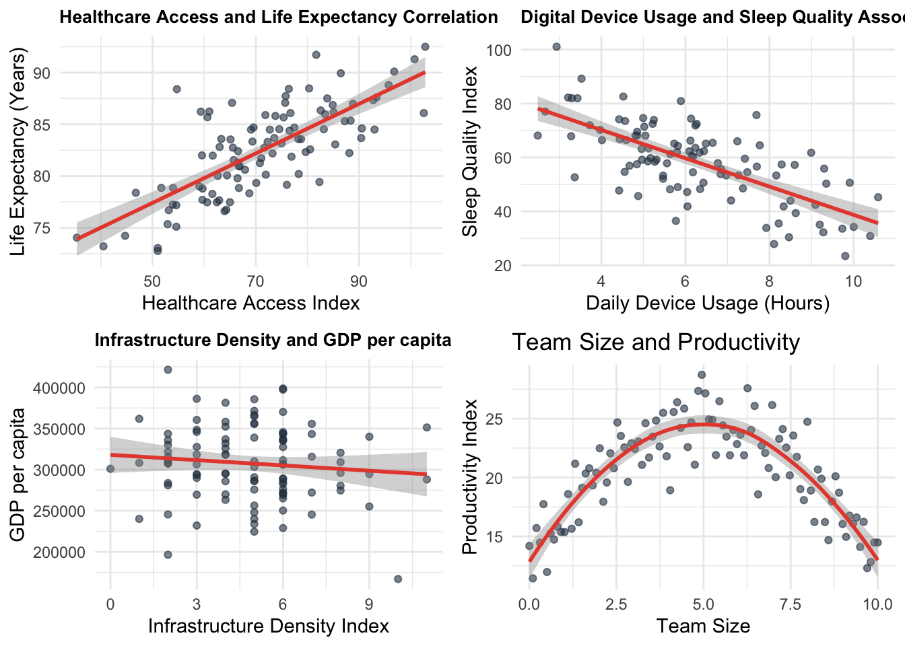
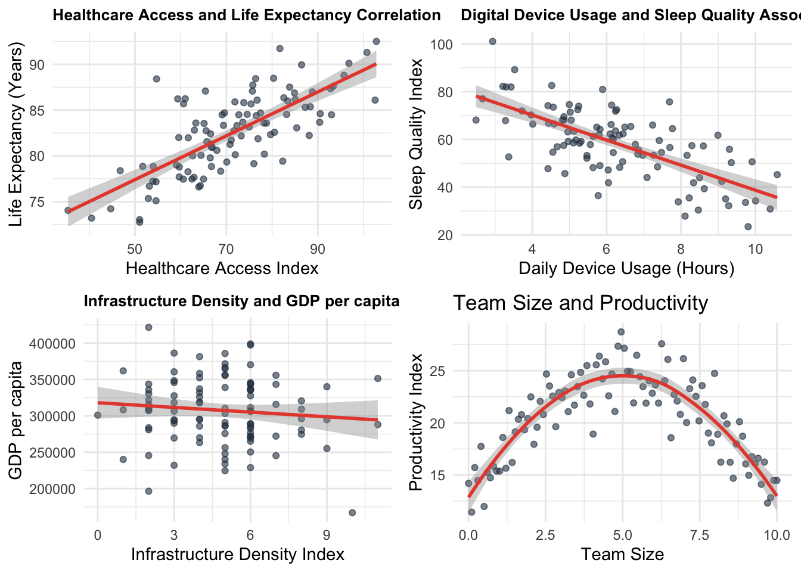
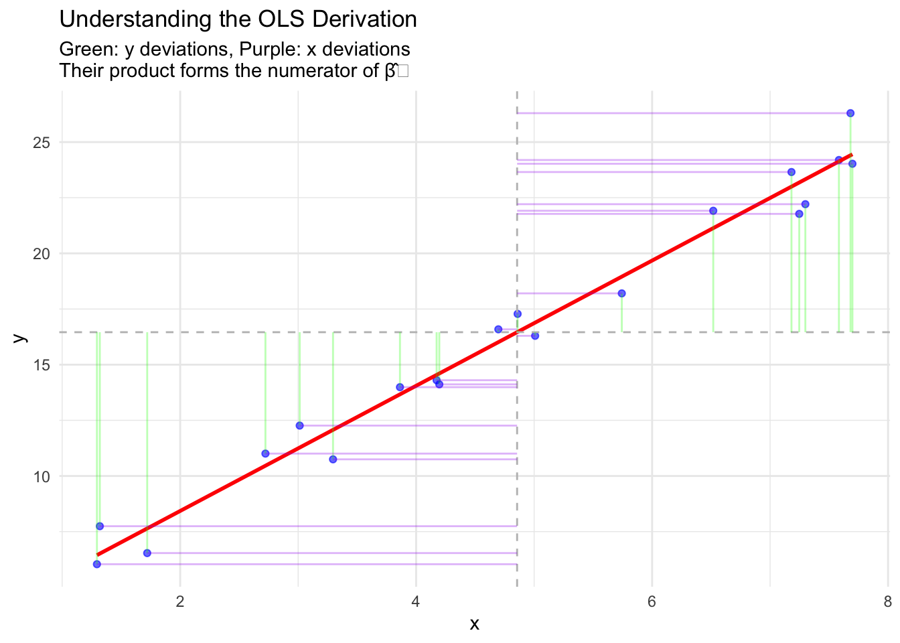
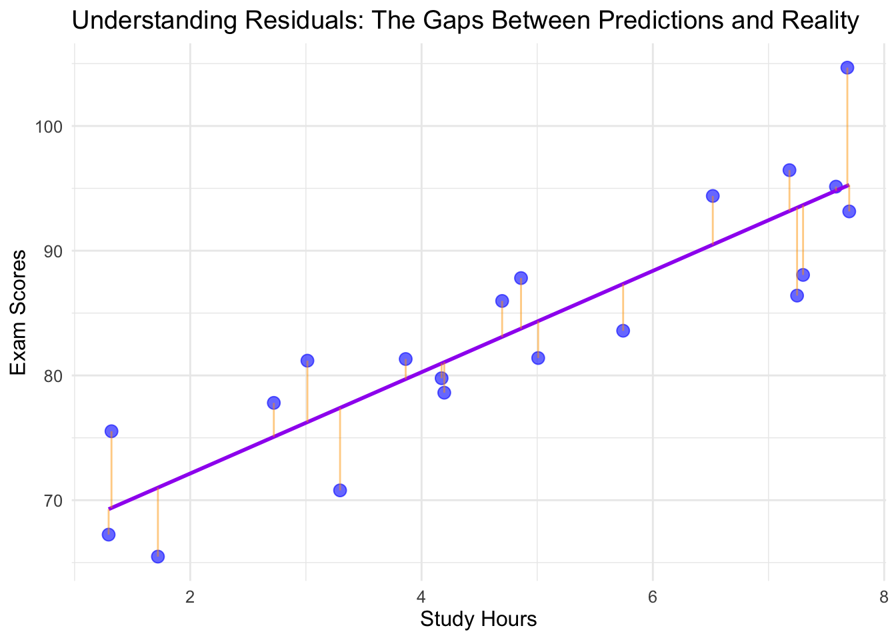
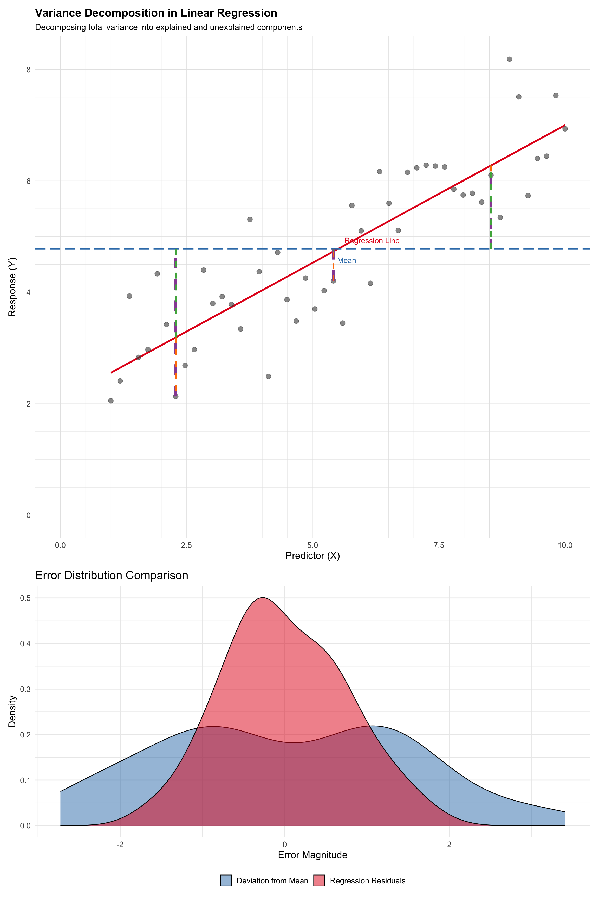
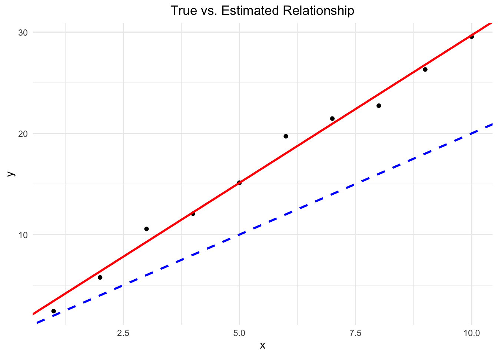

Bivariate statistics describe the relationship between two variables. We’ll explore several measures, starting with covariance and progressing to more advanced correlation measures.
Imagine you’re observing how different aspects of society move together. Sometimes when one thing increases, another increases too. Other times, they move in opposite directions. And sometimes, they move in more complex patterns!
Let’s explore some examples that show different ways variables can relate to each other:

Let’s break down what we’re seeing:
Remember:
Just because two things move together doesn’t mean one causes the other. Let’s explore some fascinating examples of “spurious correlations” - where variables appear related but aren’t actually causing each other.
What’s happening here?

What’s happening here?
Three common ways correlations can be misleading:
✅ Always ask:
❌ Don’t fall for:
Remember: In social science, most relationships are complex and involve multiple factors. Correlation is just one piece of the puzzle!
Covariance measures how two variables vary together.
Formula: cov(X,Y) = \frac{\sum_{i=1}^n (x_i - \bar{x})(y_i - \bar{y})}{n - 1}
Manual Calculation Example:
Let’s calculate the covariance for two variables:
| Step | Description | Calculation |
|---|---|---|
| 1 | Calculate means | \bar{x} = 3, \bar{y} = 4 |
| 2 | Calculate (x_i - \bar{x})(y_i - \bar{y}) for each pair | (-2)(-2) = 4 |
| (-1)(0) = 0 | ||
| (0)(1) = 0 | ||
| (1)(0) = 0 | ||
| (2)(1) = 2 | ||
| 3 | Sum the results | 4 + 0 + 0 + 0 + 2 = 6 |
| 4 | Divide by (n-1) | 6 / 4 = 1.5 |
R calculation:
x <- c(1, 2, 3, 4, 5)
y <- c(2, 4, 5, 4, 5)
cov(x, y)[1] 1.5Interpretation: - The positive covariance (1.5) indicates that x and y tend to increase together.
Pros:
Cons:
Pearson correlation measures the strength and direction of the linear relationship between two continuous variables.
Formula: r = \frac{cov(X,Y)}{s_X s_Y} = \frac{\sum (x_i - \bar{x})(y_i - \bar{y})}{\sqrt{\sum (x_i - \bar{x})^2 \sum (y_i - \bar{y})^2}}
Manual Calculation Example:
Using the same data as above:
| Step | Description | Calculation |
|---|---|---|
| 1 | Calculate covariance | (From previous calculation) 1.5 |
| 2 | Calculate standard deviations | s_X = \sqrt{\frac{10}{4}} = 1.58, s_Y = \sqrt{\frac{6}{4}} = 1.22 |
| 3 | Divide covariance by product of standard deviations | 1.5 / (1.58 * 1.22) = 0.7746 |
R calculation:
cor(x, y, method = "pearson")[1] 0.7745967Interpretation: - The correlation coefficient of 0.7746 indicates a strong positive linear relationship between x and y.
Pros:
Cons:
Spearman correlation measures the strength and direction of the monotonic relationship between two variables, which can be continuous or ordinal.
Formula: \rho = 1 - \frac{6 \sum d_i^2}{n(n^2 - 1)}, where d_i is the difference between ranks.
Manual Calculation Example:
Let’s use slightly different data:
| Step | Description | Calculation |
|---|---|---|
| 1 | Rank both variables | x_rank: 1, 2, 3, 4, 5 |
| y_rank: 1, 3, 2, 5, 4 | ||
| 2 | Calculate differences in ranks (d) | 0, -1, 1, -1, 1 |
| 3 | Square the differences | 0, 1, 1, 1, 1 |
| 4 | Sum the squared differences | \sum d_i^2 = 4 |
| 5 | Apply the formula | \rho = 1 - \frac{6(4)}{5(5^2 - 1)} = 0.8 |
R calculation:
x <- c(1, 2, 3, 4, 5)
y <- c(1, 3, 2, 5, 4)
cor(x, y, method = "spearman")[1] 0.8Interpretation: - The Spearman correlation of 0.8 indicates a strong positive monotonic relationship between x and y.
Pros:
Cons:
Cross-tabulation (contingency table) shows the relationship between two categorical variables.
Example:
Let’s create a cross-tabulation of two variables: - Education level: High School, College, Graduate - Employment status: Employed, Unemployed
education <- factor(c("High School", "College", "Graduate", "High School", "College", "Graduate", "High School", "College", "Graduate"))
employment <- factor(c("Employed", "Employed", "Employed", "Unemployed", "Employed", "Employed", "Unemployed", "Unemployed", "Employed"))
table(education, employment) employment
education Employed Unemployed
College 2 1
Graduate 3 0
High School 1 2Interpretation:
Pros:
Cons:
When deciding which bivariate statistic to use, consider:
Data type:
Relationship type:
Presence of outliers:
Distribution:
Sample size:
Remember, it’s often valuable to use multiple measures and visualizations (like scatter plots) to get a comprehensive understanding of the relationship between variables.
Correlation measures quantify the strength and direction of relationships between variables. We’ll explore three key correlation coefficients:
The Pearson correlation coefficient measures linear relationships between two continuous variables.
r = \frac{\sum_{i=1}^{n} (x_i - \bar{x})(y_i - \bar{y})}{\sqrt{\sum_{i=1}^{n} (x_i - \bar{x})^2 \sum_{i=1}^{n} (y_i - \bar{y})^2}}
where:
Spearman’s ρ assesses monotonic relationships using ranks.
\rho = 1 - \frac{6\sum d_i^2}{n(n^2-1)}
where:
Kendall’s τ measures ordinal association based on concordant and discordant pairs.
\tau = \frac{2(P - Q)}{n(n-1)}
where:
# Sample data
set.seed(123)
x <- c(2, 4, 5, 3, 8)
y <- c(3, 5, 4, 4, 7)
data <- data.frame(x = x, y = y)
# Calculate correlations
pearson_cor <- cor(x, y, method = "pearson")
spearman_cor <- cor(x, y, method = "spearman")
kendall_cor <- cor(x, y, method = "kendall")
# Display results
cat("Pearson correlation:", round(pearson_cor, 3), "\n")Pearson correlation: 0.917 cat("Spearman correlation:", round(spearman_cor, 3), "\n")Spearman correlation: 0.821 cat("Kendall correlation:", round(kendall_cor, 3), "\n")Kendall correlation: 0.738 library(ggplot2)
ggplot(data, aes(x = x, y = y)) +
geom_point() +
geom_smooth(method = "lm", se = FALSE, color = "blue") +
labs(title = "Correlation Example",
subtitle = paste("Pearson r =", round(pearson_cor, 3)),
x = "X variable",
y = "Y variable") +
theme_minimal()`geom_smooth()` using formula = 'y ~ x'
Range: [-1, 1]
Properties:
Range: [-1, 1]
Properties:
Range: [-1, 1]
Properties:
Use Pearson when:
Use Spearman when:
Use Kendall when:
# Generate non-linear relationship
set.seed(456)
x2 <- seq(1, 10, length.out = 20)
y2 <- x2^2 + rnorm(20, 0, 5)
data2 <- data.frame(x = x2, y = y2)
# Calculate correlations
cor_results <- data.frame(
Method = c("Pearson", "Spearman", "Kendall"),
Correlation = c(
cor(x2, y2, method = "pearson"),
cor(x2, y2, method = "spearman"),
cor(x2, y2, method = "kendall")
)
)
print(cor_results) Method Correlation
1 Pearson 0.9699718
2 Spearman 0.9849624
3 Kendall 0.9368421# Visualize
ggplot(data2, aes(x = x, y = y)) +
geom_point() +
geom_smooth(method = "loess", se = FALSE) +
labs(title = "Non-linear Relationship Example",
subtitle = "Compare different correlation measures",
x = "X variable",
y = "Y variable") +
theme_minimal()`geom_smooth()` using formula = 'y ~ x'Multivariate statistics involve the analysis of relationships among three or more variables simultaneously. This section will introduce some basic concepts and techniques in multivariate analysis, with a focus on correlation-based methods.
A correlation matrix is a table showing the pairwise correlations of several variables. It’s a fundamental tool in multivariate analysis.
Example: Let’s create a correlation matrix for four variables: height, weight, age, and income.
set.seed(123) # For reproducibility
height <- rnorm(100, 170, 10)
weight <- height * 0.5 + rnorm(100, 0, 5)
age <- rnorm(100, 40, 10)
income <- age * 1000 + rnorm(100, 0, 10000)
data <- data.frame(height, weight, age, income)
cor_matrix <- cor(data)
print(cor_matrix) height weight age income
height 1.0000000 0.66712996 -0.12917601 -0.12246786
weight 0.6671300 1.00000000 -0.06814187 -0.04579492
age -0.1291760 -0.06814187 1.00000000 0.65654902
income -0.1224679 -0.04579492 0.65654902 1.00000000Interpretation:
A scatterplot matrix shows pairwise relationships between multiple variables.
pairs(data)
Interpretation:
A correlation plot provides a visual representation of the correlation matrix.
library(corrplot)corrplot 0.94 loadedcorrplot(cor_matrix, method = "color")
Interpretation:
Partial correlation measures the relationship between two variables while controlling for one or more other variables.
Example: Let’s calculate the partial correlation between height and weight, controlling for age.
library(ppcor)
pcor.test(data$height, data$weight, data$age) estimate p.value statistic n gp Method
1 0.6654367 5.758157e-14 8.779896 100 1 pearsonInterpretation:
Multiple correlation measures the strength of the relationship between a dependent variable and multiple independent variables.
Example: Let’s predict weight using height and age.
model <- lm(weight ~ height + age, data = data)
R <- sqrt(summary(model)$r.squared)
print(paste("Multiple correlation coefficient:", R))[1] "Multiple correlation coefficient: 0.667377840470434"Interpretation:
Factor analysis is a technique used to reduce many variables to a smaller number of underlying factors.
Example: Let’s perform a simple factor analysis on our dataset.
library(psych)
Attaching package: 'psych'The following objects are masked from 'package:ggplot2':
%+%, alphafa_result <- fa(data, nfactors = 2, rotate = "varimax")
print(fa_result$loadings, cutoff = 0.3)
Loadings:
MR2 MR1
height 0.798
weight 0.836
age 0.729
income 0.895
MR2 MR1
SS loadings 1.344 1.341
Proportion Var 0.336 0.335
Cumulative Var 0.336 0.671Interpretation:
Sample Size: Multivariate techniques often require larger sample sizes for stable results.
Multicollinearity: High correlations among independent variables can cause issues in some analyses.
Outliers: Multivariate outliers can have a strong influence on results.
Assumptions: Many techniques assume multivariate normality and linear relationships.
Interpretation Complexity: As the number of variables increases, interpretation can become more challenging.
This introduction to multivariate statistics builds upon the concept of correlation to explore relationships among multiple variables. These techniques provide powerful tools for understanding complex datasets, but they also require careful consideration of assumptions and limitations. As you progress in your statistical journey, you’ll encounter more advanced multivariate techniques such as MANOVA, discriminant analysis, and structural equation modeling.
library(tidyverse)── Attaching core tidyverse packages ──────────────────────── tidyverse 2.0.0 ──
✔ forcats 1.0.0 ✔ readr 2.1.5
✔ lubridate 1.9.3 ✔ stringr 1.5.1
✔ purrr 1.0.2 ✔ tibble 3.2.1
── Conflicts ────────────────────────────────────────── tidyverse_conflicts() ──
✖ psych::%+%() masks ggplot2::%+%()
✖ psych::alpha() masks ggplot2::alpha()
✖ dplyr::filter() masks stats::filter()
✖ dplyr::lag() masks stats::lag()
✖ MASS::select() masks dplyr::select()
ℹ Use the conflicted package (<http://conflicted.r-lib.org/>) to force all conflicts to become errorslibrary(ggplot2)
library(broom)
library(gridExtra)
Attaching package: 'gridExtra'
The following object is masked from 'package:dplyr':
combineRegression analysis is a fundamental statistical tool that helps us understand relationships between variables. Before diving into formulas and technical details, let’s understand what questions regression can help us answer:
These questions share a common structure: they all explore how changes in one variable relate to changes in another.
Before we dive into the mathematics, let’s establish our key terms:
Let’s visualize what regression does with a simple example:
# Generate some example data
set.seed(123)
x <- seq(1, 10, by = 0.5)
y <- 2 + 3*x + rnorm(length(x), 0, 2)
data <- data.frame(x = x, y = y)
# Fit the model
model <- lm(y ~ x, data = data)
# Create the plot
ggplot(data, aes(x = x, y = y)) +
geom_point(color = "blue", alpha = 0.6) +
geom_smooth(method = "lm", se = TRUE, color = "red") +
theme_minimal() +
labs(title = "Simple Linear Regression Example",
subtitle = "Points represent data, red line shows regression fit",
x = "Independent Variable (X)",
y = "Dependent Variable (Y)") +
theme(plot.title = element_text(face = "bold"))`geom_smooth()` using formula = 'y ~ x'This plot shows the essence of regression: - Each point represents an observation (X, Y) - The line represents our best guess at the relationship - The spread of points around the line shows the uncertainty
In theory, there exists a true population relationship:
Y = \beta_0 + \beta_1X + \varepsilon
where:
In practice, we work with sample data to estimate this relationship:
\hat{Y} = \hat{\beta}_0 + \hat{\beta}_1X
Let’s visualize the difference between population and sample relationships:
# Generate population data
set.seed(456)
x_pop <- seq(1, 10, by = 0.1)
true_relationship <- 2 + 3*x_pop # True β₀=2, β₁=3
y_pop <- true_relationship + rnorm(length(x_pop), 0, 2)
# Create several samples
sample_size <- 30
samples <- data.frame(
x = rep(sample(x_pop, sample_size), 3),
sample = rep(1:3, each = sample_size)
)
samples$y <- 2 + 3*samples$x + rnorm(nrow(samples), 0, 2)
# Fit models to each sample
models <- samples %>%
group_by(sample) %>%
summarise(
intercept = coef(lm(y ~ x))[1],
slope = coef(lm(y ~ x))[2]
)
# Plot
ggplot() +
geom_point(data = samples, aes(x = x, y = y, color = factor(sample)),
alpha = 0.5) +
geom_abline(data = models,
aes(intercept = intercept, slope = slope,
color = factor(sample)),
linetype = "dashed") +
geom_line(aes(x = x_pop, y = true_relationship),
color = "black", size = 1) +
theme_minimal() +
labs(title = "Population vs. Sample Regression Lines",
subtitle = "Black line: true population relationship\nDashed lines: sample estimates",
x = "X", y = "Y",
color = "Sample") +
theme(legend.position = "bottom")Warning: Using `size` aesthetic for lines was deprecated in ggplot2 3.4.0.
ℹ Please use `linewidth` instead.This visualization shows: - The true population line (black) we’re trying to discover - Different sample estimates (dashed lines) based on different samples - How sample estimates vary around the true relationship
The most crucial assumption in regression is strict exogeneity:
E[\varepsilon|X] = 0
This means:
Let’s visualize when this assumption holds and when it doesn’t:
# Generate data
set.seed(789)
x <- seq(1, 10, by = 0.2)
# Case 1: Exogenous errors
y_exog <- 2 + 3*x + rnorm(length(x), 0, 2)
# Case 2: Non-exogenous errors (error variance increases with x)
y_nonexog <- 2 + 3*x + 0.5*x*rnorm(length(x), 0, 2)
# Create datasets
data_exog <- data.frame(
x = x,
y = y_exog,
type = "Exogenous Errors\n(Assumption Satisfied)"
)
data_nonexog <- data.frame(
x = x,
y = y_nonexog,
type = "Non-Exogenous Errors\n(Assumption Violated)"
)
data_combined <- rbind(data_exog, data_nonexog)
# Create plots with residuals
plot_residuals <- function(data, title) {
model <- lm(y ~ x, data = data)
data$predicted <- predict(model)
data$residuals <- residuals(model)
p1 <- ggplot(data, aes(x = x, y = y)) +
geom_point() +
geom_smooth(method = "lm", se = FALSE, color = "red") +
theme_minimal() +
labs(title = title)
p2 <- ggplot(data, aes(x = x, y = residuals)) +
geom_point() +
geom_hline(yintercept = 0, linetype = "dashed", color = "red") +
theme_minimal() +
labs(y = "Residuals")
list(p1, p2)
}
# Generate plots
plots_exog <- plot_residuals(data_exog, "Exogenous Errors")
plots_nonexog <- plot_residuals(data_nonexog, "Non-Exogenous Errors")
# Arrange plots
gridExtra::grid.arrange(
plots_exog[[1]], plots_exog[[2]],
plots_nonexog[[1]], plots_nonexog[[2]],
ncol = 2
)`geom_smooth()` using formula = 'y ~ x'
`geom_smooth()` using formula = 'y ~ x'The relationship between X and Y should be linear in parameters:
E[Y|X] = \beta_0 + \beta_1X
Note that this doesn’t mean X and Y must have a straight-line relationship - we can transform variables. Let’s see different types of relationships:
# Generate data
set.seed(101)
x <- seq(1, 10, by = 0.1)
# Different relationships
data_relationships <- data.frame(
x = rep(x, 3),
y = c(
# Linear
2 + 3*x + rnorm(length(x), 0, 2),
# Quadratic
2 + 0.5*x^2 + rnorm(length(x), 0, 2),
# Exponential
exp(0.3*x) + rnorm(length(x), 0, 2)
),
type = rep(c("Linear", "Quadratic", "Exponential"), each = length(x))
)
# Plot
ggplot(data_relationships, aes(x = x, y = y)) +
geom_point(alpha = 0.5) +
geom_smooth(method = "lm", se = FALSE, color = "red") +
geom_smooth(se = FALSE, color = "blue") +
facet_wrap(~type, scales = "free_y") +
theme_minimal() +
labs(subtitle = "Red: linear fit, Blue: true relationship")`geom_smooth()` using formula = 'y ~ x'
`geom_smooth()` using method = 'loess' and formula = 'y ~ x'When linearity is violated:
# Generate exponential data
set.seed(102)
x <- seq(1, 10, by = 0.2)
y <- exp(0.3*x) + rnorm(length(x), 0, 2)
# Create datasets
data_trans <- data.frame(
x = x,
y = y,
log_y = log(y)
)Warning in log(y): NaNs produced# Original scale plot
p1 <- ggplot(data_trans, aes(x = x, y = y)) +
geom_point() +
geom_smooth(method = "lm", se = FALSE, color = "red") +
theme_minimal() +
labs(title = "Original Scale")
# Log scale plot
p2 <- ggplot(data_trans, aes(x = x, y = log_y)) +
geom_point() +
geom_smooth(method = "lm", se = FALSE, color = "red") +
theme_minimal() +
labs(title = "Log-Transformed Y")
gridExtra::grid.arrange(p1, p2, ncol = 2)`geom_smooth()` using formula = 'y ~ x'
`geom_smooth()` using formula = 'y ~ x'Warning: Removed 1 row containing non-finite outside the scale range
(`stat_smooth()`).Warning: Removed 1 row containing missing values or values outside the scale range
(`geom_point()`).OLS finds \hat{\beta}_0 and \hat{\beta}_1 by minimizing the sum of squared residuals:
\min_{\hat{\beta}_0, \hat{\beta}_1} \sum_{i=1}^n (Y_i - \hat{\beta}_0 - \hat{\beta}_1X_i)^2
The solutions are:
\hat{\beta}_1 = \frac{\sum_{i=1}^n (X_i - \bar{X})(Y_i - \bar{Y})}{\sum_{i=1}^n (X_i - \bar{X})^2}
\hat{\beta}_0 = \bar{Y} - \hat{\beta}_1\bar{X}
Let’s visualize how OLS works:
# Generate sample data
set.seed(103)
x_sample <- seq(1, 10, by = 1)
y_sample <- 2 + 3*x_sample + rnorm(length(x_sample), 0, 2)
data_sample <- data.frame(x = x_sample, y = y_sample)
# Fit model
model_sample <- lm(y ~ x, data = data_sample)
data_sample$predicted <- predict(model_sample)
# Plot
ggplot(data_sample, aes(x = x, y = y)) +
geom_point(color = "blue") +
geom_line(aes(y = predicted), color = "red") +
geom_segment(aes(xend = x, y = y, yend = predicted),
color = "green", linetype = "dashed") +
theme_minimal() +
labs(title = "OLS Regression with Residuals",
subtitle = "Blue points: data\nRed line: OLS fit\nGreen dashed lines: residuals")
The total variability in Y can be broken down into explained and unexplained components:
\underbrace{\sum_{i=1}^n (Y_i - \bar{Y})^2}_{SST} = \underbrace{\sum_{i=1}^n (\hat{Y}_i - \bar{Y})^2}_{SSR} + \underbrace{\sum_{i=1}^n (Y_i - \hat{Y}_i)^2}_{SSE}
where:
Let’s visualize this decomposition:
# Generate sample data
set.seed(104)
x <- seq(1, 10, by = 0.5)
y <- 2 + 3*x + rnorm(length(x), 0, 2)
df <- data.frame(x = x, y = y)
# Fit model
model <- lm(y ~ x, data = df)
df$predicted <- predict(model)
df$residuals <- residuals(model)
df$mean_y <- mean(df$y)
# Calculate components for one point
point_index <- 10
example_point <- df[point_index, ]
# Create main plot
p_main <- ggplot(df, aes(x = x)) +
geom_point(aes(y = y), color = "blue") +
geom_line(aes(y = predicted), color = "red") +
geom_hline(yintercept = mean(df$y), linetype = "dashed") +
# Total deviation
geom_segment(data = example_point,
aes(x = x, y = mean_y, xend = x, yend = y),
color = "purple", size = 1, alpha = 0.5) +
# Explained deviation
geom_segment(data = example_point,
aes(x = x, y = mean_y, xend = x, yend = predicted),
color = "green", size = 1, alpha = 0.5) +
# Unexplained deviation
geom_segment(data = example_point,
aes(x = x, y = predicted, xend = x, yend = y),
color = "orange", size = 1, alpha = 0.5) +
theme_minimal() +
labs(title = "Decomposition of Variance",
subtitle = "Purple: Total deviation (Yi - Ȳ)\nGreen: Explained (Ŷi - Ȳ)\nOrange: Unexplained (Yi - Ŷi)")
# Calculate R-squared
summary_stats <- glance(model)
r2 <- round(summary_stats$r.squared, 3)
# Add R-squared to plot
print(p_main)
cat(sprintf("\nR² = %.3f\nThis means %.1f%% of the variance in Y is explained by X\n", r2, r2*100))
R² = 0.965
This means 96.5% of the variance in Y is explained by X
R^2 = \frac{SSR}{SST} = 1 - \frac{SSE}{SST}
Think of R² as answering the question: “What percentage of the original variation in Y can we explain using X?”
R-squared (R^2): R^2 = \frac{SSR}{SST} = 1 - \frac{SSE}{SST}
Root Mean Square Error (RMSE): RMSE = \sqrt{\frac{SSE}{n}}
Mean Absolute Error (MAE): MAE = \frac{1}{n}\sum_{i=1}^n |Y_i - \hat{Y}_i|
Let’s calculate and visualize these measures:
# Calculate measures
rmse <- sqrt(mean(residuals(model)^2))
mae <- mean(abs(residuals(model)))
# Create residual plot with different measures
ggplot(df, aes(x = predicted, y = residuals)) +
geom_point() +
geom_hline(yintercept = 0, linetype = "dashed", color = "red") +
geom_hline(yintercept = c(rmse, -rmse), linetype = "dotted", color = "blue") +
geom_hline(yintercept = c(mae, -mae), linetype = "dotted", color = "green") +
theme_minimal() +
labs(title = "Residual Plot with Error Measures",
subtitle = sprintf("RMSE = %.2f (blue lines)\nMAE = %.2f (green lines)",
rmse, mae))
Four key diagnostic plots:
# Create diagnostic plots
par(mfrow = c(2, 2))
plot(model)
Let’s interpret each plot:
Let’s start with a real-world scenario: understanding how study time affects exam performance. We collect data from your class where:
Our goal is to find a straight line that best describes this relationship. We’re trying to estimate the true relationship (which we never know exactly) using our sample of data. Let’s explore this step by step.
library(tidyverse)
# Create sample data
set.seed(123)
study_hours <- runif(20, 1, 8)
exam_scores <- 60 + 5 * study_hours + rnorm(20, 0, 5)
data <- data.frame(study_hours, exam_scores)
# Basic scatter plot with multiple lines
ggplot(data, aes(x = study_hours, y = exam_scores)) +
geom_point(color = "blue", size = 3, alpha = 0.6) +
labs(x = "Study Hours", y = "Exam Scores",
title = "Your Class Data: Study Hours vs. Exam Scores") +
theme_minimal() +
theme(text = element_text(size = 12))
Any straight line can be written in the form:
y = \hat{\beta}_0 + \hat{\beta}_1x
Where:
Let’s look at three possible lines through our data:
ggplot(data, aes(x = study_hours, y = exam_scores)) +
geom_point(color = "blue", size = 3, alpha = 0.6) +
geom_abline(intercept = 50, slope = 8, color = "red", linetype = "dashed", size = 1) +
geom_abline(intercept = 70, slope = 2, color = "green", linetype = "dashed", size = 1) +
geom_smooth(method = "lm", se = FALSE, color = "purple") +
labs(x = "Study Hours", y = "Exam Scores",
title = "Three Different Lines: Which is Best?") +
annotate("text", x = 7.5, y = 120, color = "red", label = "Line A: Too Steep") +
annotate("text", x = 7.5, y = 85, color = "green", label = "Line B: Too Flat") +
annotate("text", x = 7.5, y = 100, color = "purple", label = "Line C: Just Right") +
theme_minimal() +
theme(text = element_text(size = 12))`geom_smooth()` using formula = 'y ~ x'
Here’s where the magic of OLS begins. For each student in our data:
\text{residual}_i = y_i - \hat{y}_i = y_i - (\hat{\beta}_0 + \hat{\beta}_1x_i)
Let’s visualize these residuals for one line:
# Fit the model and show residuals
model <- lm(exam_scores ~ study_hours, data = data)
ggplot(data, aes(x = study_hours, y = exam_scores)) +
geom_point(color = "blue", size = 3, alpha = 0.6) +
geom_smooth(method = "lm", se = FALSE, color = "purple") +
geom_segment(aes(xend = study_hours,
yend = predict(model, data)),
color = "orange", alpha = 0.5) +
labs(x = "Study Hours", y = "Exam Scores",
title = "Understanding Residuals: The Gaps Between Predictions and Reality") +
theme_minimal() +
theme(text = element_text(size = 12))`geom_smooth()` using formula = 'y ~ x'
The orange vertical lines show how far off our predictions are for each student. Some predictions are too high (positive residuals), others too low (negative residuals).
This is a crucial concept! Let’s walk through it with a simple example:
Imagine we have just two students:
If we just add these residuals: (+5) + (-5) = 0
This would suggest our line is perfect (total error = 0), but we know it’s not! Both predictions were off by 5 points.
Solution: Square the residuals before adding them:
This gives us a much better measure of how wrong our predictions are!
For all students combined, we calculate:
SSR = \sum_{i=1}^n (y_i - (\hat{\beta}_0 + \hat{\beta}_1x_i))^2
This formula might look scary, but it just means:
The smaller this sum, the better our line fits the data!
# Compare good vs bad fit
bad_predictions <- 70 + 2 * data$study_hours
good_predictions <- predict(model, data)
bad_sse <- sum((data$exam_scores - bad_predictions)^2)
good_sse <- sum((data$exam_scores - good_predictions)^2)
ggplot(data, aes(x = study_hours, y = exam_scores)) +
geom_point(color = "blue", size = 3, alpha = 0.6) +
geom_abline(intercept = 70, slope = 2, color = "red",
linetype = "dashed") +
geom_smooth(method = "lm", se = FALSE, color = "purple") +
annotate("text", x = 2, y = 95,
label = paste("Red Line: Total Error =", round(bad_sse)),
color = "red") +
annotate("text", x = 2, y = 90,
label = paste("Purple Line: Total Error =", round(good_sse)),
color = "purple") +
labs(x = "Study Hours", y = "Exam Scores",
title = "Comparing Total Prediction Errors") +
theme_minimal() +
theme(text = element_text(size = 12))`geom_smooth()` using formula = 'y ~ x'
Let’s break down the name:
The OLS line has some nice properties:
Experiment with different lines and see how the total squared error changes:
library(manipulate)
manipulate(
{
predictions <- b0 + b1 * data$study_hours
ssr <- sum((data$exam_scores - predictions)^2)
ggplot(data, aes(x = study_hours, y = exam_scores)) +
geom_point(color = "blue", alpha = 0.6) +
geom_abline(slope = b1, intercept = b0, color = "red") +
labs(title = paste("Total Squared Error =", round(ssr, 1))) +
theme_minimal()
},
b0 = slider(40, 80, initial = 60, label = "Intercept (β̂₀)"),
b1 = slider(0, 10, initial = 5, label = "Slope (β̂₁)")
)Can you find the line that gives the smallest total squared error? That’s the OLS line!
The hat notation (\hat{\beta}_0, \hat{\beta}_1) reminds us that we’re estimating the true relationship from our sample. We never know the true \beta_0 and \beta_1 - we can only estimate them from our data.
OLS gives us the best possible estimates when certain conditions are met (like having randomly sampled data and a truly linear relationship).
The interactive tool above helps you understand what OLS does automatically: it finds the values of \hat{\beta}_0 and \hat{\beta}_1 that give us the smallest possible sum of squared residuals.
We seek to minimize the sum of squared residuals:
SSR = \sum_{i=1}^n (y_i - (\hat{\beta}_0 + \hat{\beta}_1x_i))^2
Let’s break this into manageable pieces:
Before proceeding, let’s recall the chain rule. For a composite function f(g(x)):
\frac{d}{dx}[f(g(x))] = f'(g(x)) \cdot g'(x)
In our case, we’re dealing with the square function f(u) = u^2, where:
Let’s take the partial derivative with respect to \hat{\beta}_0 step by step:
Start with one term of the sum:
\frac{\partial}{\partial \hat{\beta}_0}(y_i - (\hat{\beta}_0 + \hat{\beta}_1x_i))^2
Apply chain rule:
Therefore, for each term: \frac{\partial}{\partial \hat{\beta}_0}(y_i - (\hat{\beta}_0 + \hat{\beta}_1x_i))^2 = 2(y_i - (\hat{\beta}_0 + \hat{\beta}_1x_i))(-1)
Now sum all terms and set to zero: \sum_{i=1}^n 2(y_i - (\hat{\beta}_0 + \hat{\beta}_1x_i))(-1) = 0
Simplify: -2\sum_{i=1}^n (y_i - \hat{\beta}_0 - \hat{\beta}_1x_i) = 0
Remove the -2: \sum_{i=1}^n (y_i - \hat{\beta}_0 - \hat{\beta}_1x_i) = 0
Expand the sum: \sum_{i=1}^n y_i - n\hat{\beta}_0 - \hat{\beta}_1\sum_{i=1}^n x_i = 0
Solve for \hat{\beta}_0: n\hat{\beta}_0 = \sum_{i=1}^n y_i - \hat{\beta}_1\sum_{i=1}^n x_i
\hat{\beta}_0 = \frac{\sum_{i=1}^n y_i}{n} - \hat{\beta}_1\frac{\sum_{i=1}^n x_i}{n}
\hat{\beta}_0 = \bar{y} - \hat{\beta}_1\bar{x}
Now let’s find \hat{\beta}_1 with the same careful approach:
For one term: \frac{\partial}{\partial \hat{\beta}_1}(y_i - (\hat{\beta}_0 + \hat{\beta}_1x_i))^2
Apply chain rule:
Therefore: \frac{\partial}{\partial \hat{\beta}_1}(y_i - (\hat{\beta}_0 + \hat{\beta}_1x_i))^2 = 2(y_i - (\hat{\beta}_0 + \hat{\beta}_1x_i))(-x_i)
Sum all terms and set to zero: \sum_{i=1}^n 2(y_i - (\hat{\beta}_0 + \hat{\beta}_1x_i))(-x_i) = 0
Simplify: -2\sum_{i=1}^n x_i(y_i - \hat{\beta}_0 - \hat{\beta}_1x_i) = 0
Substitute \hat{\beta}_0 = \bar{y} - \hat{\beta}_1\bar{x}: -2\sum_{i=1}^n x_i(y_i - (\bar{y} - \hat{\beta}_1\bar{x}) - \hat{\beta}_1x_i) = 0
Expand: -2\sum_{i=1}^n x_i(y_i - \bar{y} + \hat{\beta}_1\bar{x} - \hat{\beta}_1x_i) = 0
Distribute x_i: -2\sum_{i=1}^n (x_iy_i - x_i\bar{y} + x_i\hat{\beta}_1\bar{x} - x_i^2\hat{\beta}_1) = 0
Collect terms with \hat{\beta}_1: \sum_{i=1}^n (x_i^2\hat{\beta}_1 - x_i\hat{\beta}_1\bar{x}) = \sum_{i=1}^n (x_iy_i - x_i\bar{y})
Factor out \hat{\beta}_1: \hat{\beta}_1\sum_{i=1}^n (x_i^2 - x_i\bar{x}) = \sum_{i=1}^n (x_iy_i - x_i\bar{y})
Final form: \hat{\beta}_1 = \frac{\sum_{i=1}^n (x_i - \bar{x})(y_i - \bar{y})}{\sum_{i=1}^n (x_i - \bar{x})^2}
To confirm these critical points are minima, we check the second derivatives:
Second derivative with respect to \hat{\beta}_0: \frac{\partial^2 SSR}{\partial \hat{\beta}_0^2} = \frac{\partial}{\partial \hat{\beta}_0}(-2\sum_{i=1}^n (y_i - \hat{\beta}_0 - \hat{\beta}_1x_i)) = 2n > 0
Second derivative with respect to \hat{\beta}_1: \frac{\partial^2 SSR}{\partial \hat{\beta}_1^2} = \frac{\partial}{\partial \hat{\beta}_1}(-2\sum_{i=1}^n x_i(y_i - \hat{\beta}_0 - \hat{\beta}_1x_i)) = 2\sum_{i=1}^n x_i^2 > 0
Cross partial derivatives: \frac{\partial^2 SSR}{\partial \hat{\beta}_0\partial \hat{\beta}_1} = \frac{\partial^2 SSR}{\partial \hat{\beta}_1\partial \hat{\beta}_0} = 2\sum_{i=1}^n x_i
The Hessian matrix is positive definite: \mathbf{H} = \begin{bmatrix} 2n & 2\sum x_i \\ 2\sum x_i & 2\sum x_i^2 \end{bmatrix}
This confirms we have found a minimum.
library(tidyverse)
# Create sample data
set.seed(123)
x <- runif(20, 1, 8)
y <- 2 + 3 * x + rnorm(20, 0, 1)
data <- data.frame(x = x, y = y)
# Calculate means
x_mean <- mean(x)
y_mean <- mean(y)
# Create visualization
ggplot(data, aes(x = x, y = y)) +
geom_point(color = "blue", alpha = 0.6) +
geom_smooth(method = "lm", se = FALSE, color = "red") +
geom_hline(yintercept = y_mean, linetype = "dashed", color = "gray") +
geom_vline(xintercept = x_mean, linetype = "dashed", color = "gray") +
geom_segment(aes(xend = x, yend = y_mean), color = "green", alpha = 0.3) +
geom_segment(aes(yend = y, xend = x_mean), color = "purple", alpha = 0.3) +
labs(title = "Understanding the OLS Derivation",
subtitle = "Green: y deviations, Purple: x deviations\nTheir product forms the numerator of β̂₁",
x = "x", y = "y") +
theme_minimal()
Imagine you’re trying to predict house prices. A simple way to make predictions is by using the average price of all houses. But what if you know additional details, like the size of the house? Would that help improve your predictions? Variance decomposition helps us measure exactly how much better our predictions are when we include more information, like house size.
library(ggplot2)
library(dplyr)
library(patchwork)
Attaching package: 'patchwork'The following object is masked from 'package:MASS':
area# Generate data with clearer pattern
set.seed(123)
x <- seq(1, 10, length.out = 50)
y <- 2 + 0.5 * x + rnorm(50, sd = 0.8)
data <- data.frame(x = x, y = y)
# Model and calculations
model <- lm(y ~ x, data)
mean_y <- mean(y)
data$predicted <- predict(model)
# Select specific points for demonstration that are well-spaced
demonstration_points <- c(8, 25, 42) # Changed points for better spacing
# Create main plot with improved aesthetics
p1 <- ggplot(data, aes(x = x, y = y)) +
# Add background grid for better readability
geom_hline(yintercept = seq(0, 8, by = 0.5), color = "gray90", linewidth = 0.2) +
geom_vline(xintercept = seq(0, 10, by = 0.5), color = "gray90", linewidth = 0.2) +
# Add regression line and mean line
geom_smooth(method = "lm", se = FALSE, color = "#E41A1C", linewidth = 1.2) +
geom_hline(yintercept = mean_y, linetype = "longdash", color = "#377EB8", linewidth = 1) +
# Add data points
geom_point(size = 3, alpha = 0.6, color = "#4A4A4A") +
# Add decomposition segments with improved colors and positioning
# Total deviation (purple)
geom_segment(data = data[demonstration_points,],
aes(x = x, xend = x, y = y, yend = mean_y),
color = "#984EA3", linetype = "dotted", linewidth = 1.5) +
# Explained component (green)
geom_segment(data = data[demonstration_points,],
aes(x = x, xend = x, y = mean_y, yend = predicted),
color = "#4DAF4A", linetype = "dashed", linewidth = 1) +
# Unexplained component (orange)
geom_segment(data = data[demonstration_points,],
aes(x = x, xend = x, y = predicted, yend = y),
color = "#FF7F00", linetype = "dashed", linewidth = 1) +
# Add annotations for better understanding
annotate("text", x = data$x[demonstration_points[2]], y = mean_y - 0.2,
label = "Mean", color = "#377EB8", hjust = -0.2) +
annotate("text", x = data$x[demonstration_points[2]],
y = data$predicted[demonstration_points[2]] + 0.2,
label = "Regression Line", color = "#E41A1C", hjust = -0.2) +
# Improve theme and labels
theme_minimal(base_size = 14) +
theme(
plot.title = element_text(size = 16, face = "bold"),
plot.subtitle = element_text(size = 12),
panel.grid = element_blank(),
legend.position = "bottom"
) +
labs(
title = "Variance Decomposition in Linear Regression",
subtitle = "Decomposing total variance into explained and unexplained components",
x = "Predictor (X)",
y = "Response (Y)"
)
# Create error distribution plot with improved aesthetics
data$mean_error <- y - mean_y
data$regression_error <- y - data$predicted
p2 <- ggplot(data) +
geom_density(aes(x = mean_error, fill = "Deviation from Mean"),
alpha = 0.5) +
geom_density(aes(x = regression_error, fill = "Regression Residuals"),
alpha = 0.5) +
theme_minimal(base_size = 14) +
theme(
legend.position = "bottom",
legend.title = element_blank()
) +
labs(
title = "Error Distribution Comparison",
x = "Error Magnitude",
y = "Density"
) +
scale_fill_manual(
values = c("#377EB8", "#E41A1C")
)
# Add legend explaining the decomposition components
legend_plot <- ggplot() +
theme_void() +
theme(
legend.position = "bottom",
legend.box = "horizontal"
) +
annotate("text", x = 0, y = 0, label = "") +
scale_color_manual(
name = "Variance Components",
values = c("#984EA3", "#4DAF4A", "#FF7F00"),
labels = c("Total Deviation", "Explained Variance", "Unexplained Variance")
)
# Combine plots with adjusted heights
combined_plot <- (p1 / p2) +
plot_layout(heights = c(2, 1))
# Print the combined plot
combined_plot`geom_smooth()` using formula = 'y ~ x'
R^2 = \frac{SSR}{SST} = 1 - \frac{SSE}{SST}
Think of R^2 as answering: “What percentage of the original variation in the data can we explain using our model?”
The multiple regression model extends our simple model to include several predictors:
Population Model: Y = \beta_0 + \beta_1X_1 + \beta_2X_2 + ... + \beta_kX_k + \varepsilon
Sample Estimation: \hat{Y} = \hat{\beta}_0 + \hat{\beta}_1X_1 + \hat{\beta}_2X_2 + ... + \hat{\beta}_kX_k
Let’s create an example with multiple predictors:
# Generate sample data with two predictors
set.seed(105)
n <- 100
X1 <- rnorm(n, mean = 50, sd = 10)
X2 <- rnorm(n, mean = 20, sd = 5)
Y <- 10 + 0.5*X1 + 0.8*X2 + rnorm(n, 0, 5)
data_multiple <- data.frame(Y = Y, X1 = X1, X2 = X2)
# Fit multiple regression model
model_multiple <- lm(Y ~ X1 + X2, data = data_multiple)
# Create 3D visualization using scatter plots
p1 <- ggplot(data_multiple, aes(x = X1, y = Y)) +
geom_point() +
geom_smooth(method = "lm", se = FALSE) +
theme_minimal() +
labs(title = "Y vs X1")
p2 <- ggplot(data_multiple, aes(x = X2, y = Y)) +
geom_point() +
geom_smooth(method = "lm", se = FALSE) +
theme_minimal() +
labs(title = "Y vs X2")
grid.arrange(p1, p2, ncol = 2)`geom_smooth()` using formula = 'y ~ x'
`geom_smooth()` using formula = 'y ~ x'# Print model summary
summary(model_multiple)
Call:
lm(formula = Y ~ X1 + X2, data = data_multiple)
Residuals:
Min 1Q Median 3Q Max
-10.8598 -3.6005 0.1166 3.0892 14.6102
Coefficients:
Estimate Std. Error t value Pr(>|t|)
(Intercept) 11.77567 4.01351 2.934 0.00418 **
X1 0.45849 0.05992 7.651 1.47e-11 ***
X2 0.81639 0.11370 7.180 1.42e-10 ***
---
Signif. codes: 0 '***' 0.001 '**' 0.01 '*' 0.05 '.' 0.1 ' ' 1
Residual standard error: 5.122 on 97 degrees of freedom
Multiple R-squared: 0.5062, Adjusted R-squared: 0.4961
F-statistic: 49.72 on 2 and 97 DF, p-value: 1.367e-15In multiple regression, each \hat{\beta}_k represents the expected change in Y for a one-unit increase in X_k, holding all other variables constant.
# Create prediction grid for X1 (holding X2 at its mean)
X1_grid <- seq(min(X1), max(X1), length.out = 100)
pred_data_X1 <- data.frame(
X1 = X1_grid,
X2 = mean(X2)
)
pred_data_X1$Y_pred <- predict(model_multiple, newdata = pred_data_X1)
# Create prediction grid for X2 (holding X1 at its mean)
X2_grid <- seq(min(X2), max(X2), length.out = 100)
pred_data_X2 <- data.frame(
X1 = mean(X1),
X2 = X2_grid
)
pred_data_X2$Y_pred <- predict(model_multiple, newdata = pred_data_X2)
# Plot partial effects
p3 <- ggplot() +
geom_point(data = data_multiple, aes(x = X1, y = Y)) +
geom_line(data = pred_data_X1, aes(x = X1, y = Y_pred),
color = "red", size = 1) +
theme_minimal() +
labs(title = "Partial Effect of X1",
subtitle = paste("(X2 held at mean =", round(mean(X2), 2), ")"))
p4 <- ggplot() +
geom_point(data = data_multiple, aes(x = X2, y = Y)) +
geom_line(data = pred_data_X2, aes(x = X2, y = Y_pred),
color = "red", size = 1) +
theme_minimal() +
labs(title = "Partial Effect of X2",
subtitle = paste("(X1 held at mean =", round(mean(X1), 2), ")"))
grid.arrange(p3, p4, ncol = 2)Multicollinearity occurs when predictors are highly correlated. Let’s demonstrate its effects:
# Generate data with multicollinearity
set.seed(106)
X1_new <- rnorm(n, mean = 50, sd = 10)
X2_new <- 2*X1_new + rnorm(n, 0, 5) # X2 highly correlated with X1
Y_new <- 10 + 0.5*X1_new + 0.8*X2_new + rnorm(n, 0, 5)
data_collinear <- data.frame(Y = Y_new, X1 = X1_new, X2 = X2_new)
# Fit model with multicollinearity
model_collinear <- lm(Y ~ X1 + X2, data = data_collinear)
# Calculate VIF
library(car)Loading required package: carData
Attaching package: 'car'The following object is masked from 'package:purrr':
someThe following object is masked from 'package:psych':
logitThe following object is masked from 'package:dplyr':
recodevif_results <- vif(model_collinear)
# Plot correlation
ggplot(data_collinear, aes(x = X1, y = X2)) +
geom_point() +
geom_smooth(method = "lm", se = FALSE, color = "red") +
theme_minimal() +
labs(title = "Correlation between Predictors",
subtitle = paste("Correlation =",
round(cor(X1_new, X2_new), 3)))`geom_smooth()` using formula = 'y ~ x'Interaction terms allow the effect of one predictor to depend on another:
Y = \beta_0 + \beta_1X_1 + \beta_2X_2 + \beta_3(X_1 \times X_2) + \varepsilon
# Generate data with interaction
set.seed(107)
X1_int <- rnorm(n, mean = 0, sd = 1)
X2_int <- rnorm(n, mean = 0, sd = 1)
Y_int <- 1 + 2*X1_int + 3*X2_int + 4*X1_int*X2_int + rnorm(n, 0, 1)
data_int <- data.frame(X1 = X1_int, X2 = X2_int, Y = Y_int)
model_int <- lm(Y ~ X1 * X2, data = data_int)
# Create interaction plot
X1_levels <- quantile(X1_int, probs = c(0.25, 0.75))
X2_seq <- seq(min(X2_int), max(X2_int), length.out = 100)
pred_data <- expand.grid(
X1 = X1_levels,
X2 = X2_seq
)
pred_data$Y_pred <- predict(model_int, newdata = pred_data)
pred_data$X1_level <- factor(pred_data$X1,
labels = c("Low X1", "High X1"))
ggplot(pred_data, aes(x = X2, y = Y_pred, color = X1_level)) +
geom_line() +
theme_minimal() +
labs(title = "Interaction Effect",
subtitle = "Effect of X2 depends on level of X1",
color = "X1 Level")When relationships are non-linear, we can add polynomial terms:
Y = \beta_0 + \beta_1X + \beta_2X^2 + \varepsilon
# Generate data with quadratic relationship
set.seed(108)
X_poly <- seq(-3, 3, length.out = 100)
Y_poly <- 1 - 2*X_poly + 3*X_poly^2 + rnorm(length(X_poly), 0, 2)
data_poly <- data.frame(X = X_poly, Y = Y_poly)
# Fit linear and quadratic models
model_linear <- lm(Y ~ X, data = data_poly)
model_quad <- lm(Y ~ X + I(X^2), data = data_poly)
# Add predictions
data_poly$pred_linear <- predict(model_linear)
data_poly$pred_quad <- predict(model_quad)
# Plot
ggplot(data_poly, aes(x = X, y = Y)) +
geom_point(alpha = 0.5) +
geom_line(aes(y = pred_linear, color = "Linear"), size = 1) +
geom_line(aes(y = pred_quad, color = "Quadratic"), size = 1) +
scale_color_manual(values = c("red", "blue")) +
theme_minimal() +
labs(title = "Linear vs. Quadratic Fit",
color = "Model Type")# Generate example dataset
set.seed(109)
n <- 100
data_example <- data.frame(
x1 = rnorm(n, mean = 50, sd = 10),
x2 = rnorm(n, mean = 20, sd = 5),
x3 = runif(n, 0, 100)
)
data_example$y <- 10 + 0.5*data_example$x1 + 0.8*data_example$x2 -
0.3*data_example$x3 + rnorm(n, 0, 5)
# Correlation matrix plot
library(GGally)Registered S3 method overwritten by 'GGally':
method from
+.gg ggplot2ggpairs(data_example) +
theme_minimal() +
labs(title = "Exploratory Data Analysis",
subtitle = "Correlation matrix and distributions")# Fit models with different variables
model1 <- lm(y ~ x1, data = data_example)
model2 <- lm(y ~ x1 + x2, data = data_example)
model3 <- lm(y ~ x1 + x2 + x3, data = data_example)
# Compare models
models_comparison <- data.frame(
Model = c("y ~ x1", "y ~ x1 + x2", "y ~ x1 + x2 + x3"),
R_squared = c(summary(model1)$r.squared,
summary(model2)$r.squared,
summary(model3)$r.squared),
Adj_R_squared = c(summary(model1)$adj.r.squared,
summary(model2)$adj.r.squared,
summary(model3)$adj.r.squared)
)
knitr::kable(models_comparison, digits = 3,
caption = "Model Comparison Summary")| Model | R_squared | Adj_R_squared |
|---|---|---|
| y ~ x1 | 0.323 | 0.316 |
| y ~ x1 + x2 | 0.433 | 0.421 |
| y ~ x1 + x2 + x3 | 0.893 | 0.890 |
Variable Selection Process
# Create data with outlier
set.seed(110)
x_clean <- rnorm(50, mean = 0, sd = 1)
y_clean <- 2 + 3*x_clean + rnorm(50, 0, 0.5)
data_clean <- data.frame(x = x_clean, y = y_clean)
# Add outlier
data_outlier <- rbind(data_clean,
data.frame(x = 4, y = -10))
# Fit models
model_clean <- lm(y ~ x, data = data_clean)
model_outlier <- lm(y ~ x, data = data_outlier)
# Plot
ggplot() +
geom_point(data = data_clean, aes(x = x, y = y), color = "blue") +
geom_point(data = data_outlier[51,], aes(x = x, y = y),
color = "red", size = 3) +
geom_line(data = data_clean,
aes(x = x, y = predict(model_clean),
color = "Without Outlier")) +
geom_line(data = data_outlier,
aes(x = x, y = predict(model_outlier),
color = "With Outlier")) +
theme_minimal() +
labs(title = "Effect of Outliers on Regression",
color = "Model") +
scale_color_manual(values = c("blue", "red"))# Create data with missing values
set.seed(111)
data_missing <- data_example
data_missing$x1[sample(1:n, 10)] <- NA
data_missing$x2[sample(1:n, 15)] <- NA
data_missing$x3[sample(1:n, 20)] <- NA
# Visualize missing patterns
library(naniar)
vis_miss(data_missing) +
theme_minimal() +
labs(title = "Missing Data Patterns")# Generate heteroscedastic data
set.seed(112)
x_hetero <- seq(-3, 3, length.out = 100)
y_hetero <- 2 + 1.5*x_hetero + rnorm(100, 0, abs(x_hetero)/2)
data_hetero <- data.frame(x = x_hetero, y = y_hetero)
# Fit model
model_hetero <- lm(y ~ x, data = data_hetero)
# Plot
p1 <- ggplot(data_hetero, aes(x = x, y = y)) +
geom_point() +
geom_smooth(method = "lm", se = FALSE) +
theme_minimal() +
labs(title = "Heteroscedastic Data")
p2 <- ggplot(data_hetero, aes(x = fitted(model_hetero),
y = residuals(model_hetero))) +
geom_point() +
geom_hline(yintercept = 0, linetype = "dashed", color = "red") +
theme_minimal() +
labs(title = "Residual Plot",
x = "Fitted values",
y = "Residuals")
grid.arrange(p1, p2, ncol = 2)`geom_smooth()` using formula = 'y ~ x'# Simple cross-validation example
set.seed(113)
# Create training and test sets
train_index <- sample(1:nrow(data_example), 0.7*nrow(data_example))
train_data <- data_example[train_index, ]
test_data <- data_example[-train_index, ]
# Fit model on training data
model_train <- lm(y ~ x1 + x2 + x3, data = train_data)
# Predict on test data
predictions <- predict(model_train, newdata = test_data)
actual <- test_data$y
# Calculate performance metrics
rmse <- sqrt(mean((predictions - actual)^2))
mae <- mean(abs(predictions - actual))
r2 <- cor(predictions, actual)^2
# Plot predictions vs actual
data_validation <- data.frame(
Predicted = predictions,
Actual = actual
)
ggplot(data_validation, aes(x = Actual, y = Predicted)) +
geom_point() +
geom_abline(intercept = 0, slope = 1, color = "red", linetype = "dashed") +
theme_minimal() +
labs(title = "Model Validation: Predicted vs Actual",
subtitle = sprintf("RMSE = %.2f, MAE = %.2f, R² = %.2f",
rmse, mae, r2))Example of a professional regression results table:
# Create regression results table
library(broom)
library(kableExtra)
Attaching package: 'kableExtra'The following object is masked from 'package:dplyr':
group_rowsmodel_final <- lm(y ~ x1 + x2 + x3, data = data_example)
results <- tidy(model_final, conf.int = TRUE)
kable(results, digits = 3,
caption = "Regression Results Summary") %>%
kable_styling(bootstrap_options = c("striped", "hover"))| term | estimate | std.error | statistic | p.value | conf.low | conf.high |
|---|---|---|---|---|---|---|
| (Intercept) | 9.116 | 2.835 | 3.216 | 0.002 | 3.489 | 14.743 |
| x1 | 0.497 | 0.039 | 12.756 | 0.000 | 0.419 | 0.574 |
| x2 | 0.905 | 0.086 | 10.468 | 0.000 | 0.734 | 1.077 |
| x3 | -0.324 | 0.016 | -20.322 | 0.000 | -0.356 | -0.292 |
For deeper understanding:
data <- data.frame(
anxiety_level = c(8, 5, 11, 14, 7, 10),
cognitive_performance = c(85, 90, 62, 55, 80, 65)
)| Variable | Calculation | Result |
|---|---|---|
| Mean Anxiety (\bar{x}) | (8 + 5 + 11 + 14 + 7 + 10) ÷ 6 | 9.17 |
| Mean Cognitive (\bar{y}) | (85 + 90 + 62 + 55 + 80 + 65) ÷ 6 | 72.83 |
| i | x_i | y_i | (x_i - \bar{x}) | (y_i - \bar{y}) | (x_i - \bar{x})(y_i - \bar{y}) |
|---|---|---|---|---|---|
| 1 | 8 | 85 | -1.17 | 12.17 | -14.24 |
| 2 | 5 | 90 | -4.17 | 17.17 | -71.60 |
| 3 | 11 | 62 | 1.83 | -10.83 | -19.82 |
| 4 | 14 | 55 | 4.83 | -17.83 | -86.12 |
| 5 | 7 | 80 | -2.17 | 7.17 | -15.56 |
| 6 | 10 | 65 | 0.83 | -7.83 | -6.50 |
| Sum | 55 | 437 | 0.00 | 0.00 | -213.84 |
\text{Cov}(X,Y) = \frac{\sum (x_i - \bar{x})(y_i - \bar{y})}{n-1} = \frac{-213.84}{5} = -42.77
| i | (x_i - \bar{x}) | (y_i - \bar{y}) | (x_i - \bar{x})^2 | (y_i - \bar{y})^2 |
|---|---|---|---|---|
| 1 | -1.17 | 12.17 | 1.37 | 148.11 |
| 2 | -4.17 | 17.17 | 17.39 | 294.81 |
| 3 | 1.83 | -10.83 | 3.35 | 117.29 |
| 4 | 4.83 | -17.83 | 23.33 | 317.91 |
| 5 | -2.17 | 7.17 | 4.71 | 51.41 |
| 6 | 0.83 | -7.83 | 0.69 | 61.31 |
| Sum | 0.00 | 0.00 | 50.84 | 990.84 |
| Measure | Formula | Calculation | Result |
|---|---|---|---|
| s_x | \sqrt{\frac{\sum (x_i - \bar{x})^2}{n-1}} | \sqrt{\frac{50.84}{5}} | 3.19 |
| s_y | \sqrt{\frac{\sum (y_i - \bar{y})^2}{n-1}} | \sqrt{\frac{990.84}{5}} | 14.08 |
r = \frac{\text{Cov}(X,Y)}{s_x s_y} = \frac{-42.77}{3.19 \times 14.08} = -0.95
| i | x_i | y_i | Rank x_i | Rank y_i | d_i | d_i^2 |
|---|---|---|---|---|---|---|
| 1 | 8 | 85 | 3 | 2 | 1 | 1 |
| 2 | 5 | 90 | 1 | 1 | 0 | 0 |
| 3 | 11 | 62 | 5 | 5 | 0 | 0 |
| 4 | 14 | 55 | 6 | 6 | 0 | 0 |
| 5 | 7 | 80 | 2 | 3 | -1 | 1 |
| 6 | 10 | 65 | 4 | 4 | 0 | 0 |
| Sum | 2 |
\rho = 1 - \frac{6\sum d_i^2}{n(n^2-1)} = 1 - \frac{6(2)}{6(36-1)} = 1 - \frac{12}{210} = 0.94
# Calculate correlations using R
cor(data$anxiety_level, data$cognitive_performance, method = "pearson")[1] -0.9527979cor(data$anxiety_level, data$cognitive_performance, method = "spearman")[1] -0.9428571The strong negative Pearson correlation (r = -0.95) indicates a very strong negative linear relationship between anxiety level and cognitive performance.
The strong positive Spearman correlation (ρ = 0.94) shows that the relationship is also strongly monotonic.
The difference between Pearson and Spearman correlations suggests that while there is a strong relationship, it might not be perfectly linear.
Given data on Electoral District Magnitude (\text{DM}) and Gallagher index:
| \text{DM} (X) | Gallagher (Y) |
|---|---|
| 2 | 18.2 |
| 3 | 16.7 |
| 4 | 15.8 |
| 5 | 15.3 |
| 6 | 15.0 |
| 7 | 14.8 |
| 8 | 14.7 |
| 9 | 14.6 |
| 10 | 14.55 |
| 11 | 14.52 |
Calculation of means:
For \text{DM} (X): \bar{X} = \frac{\sum_{i=1}^n X_i}{n}
Detailed calculation:
2 + 3 + 4 + 5 + 6 + 7 + 8 + 9 + 10 + 11 = 65 \bar{x} = \frac{65}{10} = 6.5
For Gallagher index (Y): \bar{Y} = \frac{\sum_{i=1}^n Y_i}{n}
Detailed calculation:
18.2 + 16.7 + 15.8 + 15.3 + 15.0 + 14.8 + 14.7 + 14.6 + 14.55 + 14.52 = 154.17 \bar{y} = \frac{154.17}{10} = 15.417
Complete working table showing all calculations:
| i | X_i | Y_i | (X_i - \bar{X}) | (Y_i - \bar{Y}) | (X_i - \bar{X})(Y_i - \bar{Y}) | (X_i - \bar{X})^2 | (Y_i - \bar{Y})^2 |
|---|---|---|---|---|---|---|---|
| 1 | 2 | 18.2 | -4.5 | 2.783 | -12.5235 | 20.25 | 7.7451 |
| 2 | 3 | 16.7 | -3.5 | 1.283 | -4.4905 | 12.25 | 1.6461 |
| 3 | 4 | 15.8 | -2.5 | 0.383 | -0.9575 | 6.25 | 0.1467 |
| 4 | 5 | 15.3 | -1.5 | -0.117 | 0.1755 | 2.25 | 0.0137 |
| 5 | 6 | 15.0 | -0.5 | -0.417 | 0.2085 | 0.25 | 0.1739 |
| 6 | 7 | 14.8 | 0.5 | -0.617 | -0.3085 | 0.25 | 0.3807 |
| 7 | 8 | 14.7 | 1.5 | -0.717 | -1.0755 | 2.25 | 0.5141 |
| 8 | 9 | 14.6 | 2.5 | -0.817 | -2.0425 | 6.25 | 0.6675 |
| 9 | 10 | 14.55 | 3.5 | -0.867 | -3.0345 | 12.25 | 0.7517 |
| 10 | 11 | 14.52 | 4.5 | -0.897 | -4.0365 | 20.25 | 0.8047 |
| Sum | 65 | 154.17 | 0 | 0 | -28.085 | 82.5 | 12.8442 |
Covariance calculation: \text{Cov}(X,Y) = \frac{\sum_{i=1}^n (X_i - \bar{X})(Y_i - \bar{Y})}{n-1}
\text{Cov}(X,Y) = \frac{-28.085}{9} = -3.120556
For \text{DM} (X): \sigma_X = \sqrt{\frac{\sum_{i=1}^n (X_i - \bar{X})^2}{n-1}}
\sigma_x = \sqrt{\frac{82.5}{9}} = \sqrt{9.1667} = 3.026582
For Gallagher (Y): \sigma_Y = \sqrt{\frac{\sum_{i=1}^n (Y_i - \bar{Y})^2}{n-1}}
\sigma_y = \sqrt{\frac{12.8442}{9}} = \sqrt{1.4271} = 1.194612
r = \frac{\text{Cov}(X,Y)}{\sigma_X \sigma_Y}
r = \frac{-3.120556}{3.026582 \times 1.194612} = \frac{-3.120556}{3.615752} = -0.863044
Complete ranking table with all calculations:
| i | X_i | Y_i | Rank X_i | Rank Y_i | d_i | d_i^2 |
|---|---|---|---|---|---|---|
| 1 | 2 | 18.2 | 1 | 10 | -9 | 81 |
| 2 | 3 | 16.7 | 2 | 9 | -7 | 49 |
| 3 | 4 | 15.8 | 3 | 8 | -5 | 25 |
| 4 | 5 | 15.3 | 4 | 7 | -3 | 9 |
| 5 | 6 | 15.0 | 5 | 6 | -1 | 1 |
| 6 | 7 | 14.8 | 6 | 5 | 1 | 1 |
| 7 | 8 | 14.7 | 7 | 4 | 3 | 9 |
| 8 | 9 | 14.6 | 8 | 3 | 5 | 25 |
| 9 | 10 | 14.55 | 9 | 2 | 7 | 49 |
| 10 | 11 | 14.52 | 10 | 1 | 9 | 81 |
| Sum | 330 |
Spearman correlation calculation: \rho = 1 - \frac{6\sum d_i^2}{n(n^2-1)}
\rho = 1 - \frac{6 \times 330}{10(100 - 1)} = 1 - \frac{1980}{990} = 1 - 2 = -1
# Create vectors
DM <- c(2, 3, 4, 5, 6, 7, 8, 9, 10, 11)
GH <- c(18.2, 16.7, 15.8, 15.3, 15.0, 14.8, 14.7, 14.6, 14.55, 14.52)
# Calculate covariance
cov(DM, GH)[1] -3.120556# Calculate correlations
cor(DM, GH, method = "pearson")[1] -0.8627742cor(DM, GH, method = "spearman")[1] -1library(ggplot2)
# Create data frame
data <- data.frame(DM = DM, GH = GH)
# Create scatter plot
ggplot(data, aes(x = DM, y = GH)) +
geom_point(size = 3, color = "blue") +
geom_smooth(method = "lm", se = FALSE, color = "red") +
labs(
title = "District Magnitude vs Gallagher Index",
x = "District Magnitude (DM)",
y = "Gallagher Index (GH)"
) +
theme_minimal()`geom_smooth()` using formula = 'y ~ x'
Using previously calculated values: - \sum(X_i - \bar{X})(Y_i - \bar{Y}) = -28.085 - \sum(X_i - \bar{X})^2 = 82.5 - \bar{X} = 6.5 - \bar{Y} = 15.417
Calculate slope (\hat{\beta_1}): \hat{\beta_1} = \frac{\sum(X_i - \bar{X})(Y_i - \bar{Y})}{\sum(X_i - \bar{X})^2}
\hat{\beta_1} = -28,085 ÷ 82,5 = -0,3404
Calculate intercept (\hat{\beta_0}): \hat{\beta_0} = \bar{Y} - \hat{\beta_1}\bar{X}
\hat{\beta_0} = 15,417 - (-0,3404 × 6,5) = 15,417 + 2,2126 = 17,6296
Therefore, the OLS regression equation is: \hat{Y} = 17.6296 - 0.3404X
Complete table showing all calculations:
| i | X_i | Y_i | \hat{Y}_i | e_i = Y_i - \hat{Y}_i | e_i^2 | (Y_i - \bar{Y})^2 | (\hat{Y}_i - \bar{Y})^2 |
|---|---|---|---|---|---|---|---|
| 1 | 2 | 18.2 | 16.9488 | 1.2512 | 1.5655 | 7.7451 | 2.3404 |
| 2 | 3 | 16.7 | 16.6084 | 0.0916 | 0.0084 | 1.6461 | 1.4241 |
| 3 | 4 | 15.8 | 16.2680 | -0.4680 | 0.2190 | 0.1467 | 0.7225 |
| 4 | 5 | 15.3 | 15.9276 | -0.6276 | 0.3939 | 0.0137 | 0.2601 |
| 5 | 6 | 15.0 | 15.5872 | -0.5872 | 0.3448 | 0.1739 | 0.0289 |
| 6 | 7 | 14.8 | 15.2468 | -0.4468 | 0.1996 | 0.3807 | 0.0290 |
| 7 | 8 | 14.7 | 14.9064 | -0.2064 | 0.0426 | 0.5141 | 0.2610 |
| 8 | 9 | 14.6 | 14.5660 | 0.0340 | 0.0012 | 0.6675 | 0.7241 |
| 9 | 10 | 14.55 | 14.2256 | 0.3244 | 0.1052 | 0.7517 | 1.4184 |
| 10 | 11 | 14.52 | 13.8852 | 0.6348 | 0.4030 | 0.8047 | 2.3439 |
| Sum | 65 | 154.17 | 154.17 | 0 | 3.2832 | 12.8442 | 9.5524 |
Calculations for fitted values:
For X = 2:
Ŷ = 17.6296 + (-0.3404 × 2) = 16.9488
For X = 3:
Ŷ = 17.6296 + (-0.3404 × 3) = 16.6084
[... continue for all values]Sum of Squared Errors (SSE): SSE = \sum e_i^2
SSE = 3.2832Sum of Squared Total (SST): SST = \sum(Y_i - \bar{Y})^2
SST = 12.8442Sum of Squared Regression (SSR): SSR = \sum(\hat{Y}_i - \bar{Y})^2
SSR = 9.5524Verify decomposition: SST = SSR + SSE
12.8442 = 9.5524 + 3.2832 (within rounding error)R-squared calculation: R^2 = \frac{SSR}{SST} = 1 - \frac{SSE}{SST}
R² = 9.5524 ÷ 12.8442
= 0.7438# Fit linear model
model <- lm(GH ~ DM, data = data)
# View summary statistics
summary(model)
Call:
lm(formula = GH ~ DM, data = data)
Residuals:
Min 1Q Median 3Q Max
-0.62764 -0.46274 -0.08615 0.26624 1.25109
Coefficients:
Estimate Std. Error t value Pr(>|t|)
(Intercept) 17.62976 0.50121 35.174 4.67e-10 ***
DM -0.34042 0.07053 -4.827 0.00131 **
---
Signif. codes: 0 '***' 0.001 '**' 0.01 '*' 0.05 '.' 0.1 ' ' 1
Residual standard error: 0.6406 on 8 degrees of freedom
Multiple R-squared: 0.7444, Adjusted R-squared: 0.7124
F-statistic: 23.3 on 1 and 8 DF, p-value: 0.00131# Calculate R-squared manually
SST <- sum((GH - mean(GH))^2)
SSE <- sum(residuals(model)^2)
SSR <- SST - SSE
R2_manual <- SSR/SST
R2_manual[1] 0.7443793# Create residual plots
par(mfrow = c(2, 2))
plot(model)
# Create predicted vs actual plot
ggplot(data.frame(
Actual = GH,
Predicted = fitted(model)
), aes(x = Predicted, y = Actual)) +
geom_point(color = "blue", size = 3) +
geom_abline(intercept = 0, slope = 1, linetype = "dashed", color = "red") +
labs(
title = "Predicted vs Actual Values",
x = "Predicted Gallagher Index",
y = "Actual Gallagher Index"
) +
theme_minimal()First, calculate natural logarithms of variables:
| i | X_i | Y_i | \ln(X_i) | \ln(Y_i) |
|---|---|---|---|---|
| 1 | 2 | 18.2 | 0.6931 | 2.9014 |
| 2 | 3 | 16.7 | 1.0986 | 2.8154 |
| 3 | 4 | 15.8 | 1.3863 | 2.7600 |
| 4 | 5 | 15.3 | 1.6094 | 2.7278 |
| 5 | 6 | 15.0 | 1.7918 | 2.7081 |
| 6 | 7 | 14.8 | 1.9459 | 2.6946 |
| 7 | 8 | 14.7 | 2.0794 | 2.6878 |
| 8 | 9 | 14.6 | 2.1972 | 2.6810 |
| 9 | 10 | 14.55 | 2.3026 | 2.6777 |
| 10 | 11 | 14.52 | 2.3979 | 2.6757 |
We estimate three alternative specifications:
# Create transformed variables
data$log_DM <- log(data$DM)
data$log_GH <- log(data$GH)
# Fit models
model_linear <- lm(GH ~ DM, data = data)
model_loglinear <- lm(log_GH ~ DM, data = data)
model_linearlog <- lm(GH ~ log_DM, data = data)
model_loglog <- lm(log_GH ~ log_DM, data = data)
# Compare R-squared values
models_comparison <- data.frame(
Model = c("Linear", "Log-linear", "Linear-log", "Log-log"),
R_squared = c(
summary(model_linear)$r.squared,
summary(model_loglinear)$r.squared,
summary(model_linearlog)$r.squared,
summary(model_loglog)$r.squared
)
)
# Display comparison
models_comparison Model R_squared
1 Linear 0.7443793
2 Log-linear 0.7670346
3 Linear-log 0.9141560
4 Log-log 0.9288088# Create plots for each model
p1 <- ggplot(data, aes(x = DM, y = GH)) +
geom_point() +
geom_smooth(method = "lm", se = FALSE) +
labs(title = "Linear Model") +
theme_minimal()
p2 <- ggplot(data, aes(x = DM, y = log_GH)) +
geom_point() +
geom_smooth(method = "lm", se = FALSE) +
labs(title = "Log-linear Model") +
theme_minimal()
p3 <- ggplot(data, aes(x = log_DM, y = GH)) +
geom_point() +
geom_smooth(method = "lm", se = FALSE) +
labs(title = "Linear-log Model") +
theme_minimal()
p4 <- ggplot(data, aes(x = log_DM, y = log_GH)) +
geom_point() +
geom_smooth(method = "lm", se = FALSE) +
labs(title = "Log-log Model") +
theme_minimal()
# Arrange plots in a grid
library(gridExtra)
grid.arrange(p1, p2, p3, p4, ncol = 2)`geom_smooth()` using formula = 'y ~ x'
`geom_smooth()` using formula = 'y ~ x'
`geom_smooth()` using formula = 'y ~ x'
`geom_smooth()` using formula = 'y ~ x'
Based on R-squared values, analyze residuals for the best-fitting model:
# Residual plots for best model
par(mfrow = c(2, 2))
plot(model_linearlog)The linear-log model coefficients:
summary(model_linearlog)
Call:
lm(formula = GH ~ log_DM, data = data)
Residuals:
Min 1Q Median 3Q Max
-0.40702 -0.30207 -0.04907 0.22905 0.60549
Coefficients:
Estimate Std. Error t value Pr(>|t|)
(Intercept) 19.0223 0.4079 46.64 4.94e-11 ***
log_DM -2.0599 0.2232 -9.23 1.54e-05 ***
---
Signif. codes: 0 '***' 0.001 '**' 0.01 '*' 0.05 '.' 0.1 ' ' 1
Residual standard error: 0.3712 on 8 degrees of freedom
Multiple R-squared: 0.9142, Adjusted R-squared: 0.9034
F-statistic: 85.19 on 1 and 8 DF, p-value: 1.539e-05Interpretation: - \hat{\beta_0} represents the expected Gallagher Index when ln(DM) = 0 (i.e., when DM = 1) - \hat{\beta_1} represents the change in Gallagher Index associated with a one-unit increase in ln(DM)
# Create prediction plot for best model
ggplot(data, aes(x = log_DM, y = GH)) +
geom_point(color = "blue", size = 3) +
geom_smooth(method = "lm", se = TRUE, color = "red") +
labs(
title = "Linear-log Model: Gallagher Index vs ln(District Magnitude)",
x = "ln(District Magnitude)",
y = "Gallagher Index"
) +
theme_minimal()`geom_smooth()` using formula = 'y ~ x'
For the log-log model, coefficients represent elasticities directly. Calculate average elasticity for the linear-log model:
# Calculate elasticity at means
mean_DM <- mean(data$DM)
mean_GH <- mean(data$GH)
beta1 <- coef(model_linearlog)[2]
elasticity <- beta1 * (1/mean_GH)
elasticity log_DM
-0.1336136 This represents the percentage change in the Gallagher Index for a 1% change in District Magnitude.
data <- data.frame(
x = c(2, 4, 5, 3, 8),
y = c(3, 5, 4, 4, 7)
)r = \frac{\sum (x_i - \bar{x})(y_i - \bar{y})}{\sqrt{\sum (x_i - \bar{x})^2 \sum (y_i - \bar{y})^2}}
| i | x_i | y_i | x_i - \bar{x} | y_i - \bar{y} | (x_i - \bar{x})(y_i - \bar{y}) | (x_i - \bar{x})^2 | (y_i - \bar{y})^2 |
|---|---|---|---|---|---|---|---|
| 1 | 2 | 3 | -2.4 | -1.6 | 3.84 | 5.76 | 2.56 |
| 2 | 4 | 5 | -0.4 | 0.4 | -0.16 | 0.16 | 0.16 |
| 3 | 5 | 4 | 0.6 | -0.6 | -0.36 | 0.36 | 0.36 |
| 4 | 3 | 4 | -1.4 | -0.6 | 0.84 | 1.96 | 0.36 |
| 5 | 8 | 7 | 3.6 | 2.4 | 8.64 | 12.96 | 5.76 |
| Sum | 22 | 23 | 0 | 0 | 12.8 | 21.2 | 9.2 |
\bar{x} = 4.4 \bar{y} = 4.6
r = \frac{12.8}{\sqrt{21.2 \times 9.2}} = \frac{12.8}{\sqrt{195.04}} = \frac{12.8}{13.97} = 0.92
\rho = 1 - \frac{6\sum d_i^2}{n(n^2-1)}
| i | x_i | y_i | Rank x_i | Rank y_i | d_i | d_i^2 |
|---|---|---|---|---|---|---|
| 1 | 2 | 3 | 1 | 1 | 0 | 0 |
| 2 | 4 | 5 | 3 | 5 | -2 | 4 |
| 3 | 5 | 4 | 4 | 2.5 | 1.5 | 2.25 |
| 4 | 3 | 4 | 2 | 2.5 | -0.5 | 0.25 |
| 5 | 8 | 7 | 5 | 4 | 1 | 1 |
| Sum | 7.5 |
\rho = 1 - \frac{6(7.5)}{5(25-1)} = 1 - \frac{45}{120} = 0.82
\tau = \frac{\text{number of concordant pairs} - \text{number of discordant pairs}}{\frac{1}{2}n(n-1)}
| Pair (i,j) | x_i,x_j | y_i,y_j | x_j-x_i | y_j-y_i | Result |
|---|---|---|---|---|---|
| (1,2) | 2,4 | 3,5 | +2 | +2 | C |
| (1,3) | 2,5 | 3,4 | +3 | +1 | C |
| (1,4) | 2,3 | 3,4 | +1 | +1 | C |
| (1,5) | 2,8 | 3,7 | +6 | +4 | C |
| (2,3) | 4,5 | 5,4 | +1 | -1 | D |
| (2,4) | 4,3 | 5,4 | -1 | -1 | C |
| (2,5) | 4,8 | 5,7 | +4 | +2 | C |
| (3,4) | 5,3 | 4,4 | -2 | 0 | D |
| (3,5) | 5,8 | 4,7 | +3 | +3 | C |
| (4,5) | 3,8 | 4,7 | +5 | +3 | C |
Number of concordant pairs = 8 Number of discordant pairs = 2 \tau = \frac{8-2}{10} = 0.74
cat("Pearson:", round(cor(data$x, data$y, method="pearson"), 2), "\n")Pearson: 0.92 cat("Spearman:", round(cor(data$x, data$y, method="spearman"), 2), "\n")Spearman: 0.82 cat("Kendall:", round(cor(data$x, data$y, method="kendall"), 2), "\n")Kendall: 0.74 In this tutorial, we will explore the bias in Ordinary Least Squares (OLS) estimation when the error term is correlated with the explanatory variable, a situation known as endogeneity. We will first derive the bias mathematically and then illustrate it using a simulated dataset in R.
Consider a data generating process (DGP) where the true relationship between x and y is:
y = 2x + e
However, there is an endogeneity problem because the error term e is correlated with x in the following way:
e = 1x + u
where u is an independent error term.
If we estimate the simple linear model y = \hat{\beta_0} + \hat{\beta_1}x + \varepsilon using OLS, the OLS estimator of \hat{\beta_1} will be biased due to the endogeneity issue.
To understand the bias, let’s derive the expected value of the OLS estimator \hat{\beta}_1:
\begin{align*} E[\hat{\beta}_1] &= E[(X'X)^{-1}X'y] \\ &= E[(X'X)^{-1}X'(2x + 1x + u)] \\ &= E[(X'X)^{-1}X'(3x + u)] \\ &= 3 + E[(X'X)^{-1}X'u] \end{align*}
If the error term u is uncorrelated with x, then E[(X'X)^{-1}X'u] = 0, and the OLS estimator would be unbiased: E[\hat{\beta}_1] = 3. However, in this case, the original error term e is correlated with x, so u is also likely to be correlated with x.
Assuming E[(X'X)^{-1}X'u] \neq 0, the OLS estimator will be biased:
\begin{align*} \text{Bias}(\hat{\beta}_1) &= E[\hat{\beta}_1] - \beta_{1,\text{true}} \\ &= 3 + E[(X'X)^{-1}X'u] - 2 \\ &= 1 + E[(X'X)^{-1}X'u] \end{align*}
The direction and magnitude of the bias will depend on the correlation between x and u. If x and u are positively correlated, the bias will be positive, and the OLS estimator will overestimate the true coefficient. Conversely, if x and u are negatively correlated, the bias will be negative, and the OLS estimator will underestimate the true coefficient.
Let’s create a simple dataset with 10 observations where x is in the interval 1:10, and generate y values based on the given DGP: y = 2x + e, where e = 1x + u, and u is a random error term.
set.seed(123) # for reproducibility
x <- 1:10
u <- rnorm(10, mean = 0, sd = 1)
e <- 1*x + u
# e <- 1*x
y <- 2*x + e
# Generate the data frame
data <- data.frame(x = x, y = y)
# Estimate the OLS model
model <- lm(y ~ x, data = data)
# Print the model summary
summary(model)
Call:
lm(formula = y ~ x, data = data)
Residuals:
Min 1Q Median 3Q Max
-1.1348 -0.5624 -0.1393 0.3854 1.6814
Coefficients:
Estimate Std. Error t value Pr(>|t|)
(Intercept) 0.5255 0.6673 0.787 0.454
x 2.9180 0.1075 27.134 3.67e-09 ***
---
Signif. codes: 0 '***' 0.001 '**' 0.01 '*' 0.05 '.' 0.1 ' ' 1
Residual standard error: 0.9768 on 8 degrees of freedom
Multiple R-squared: 0.9893, Adjusted R-squared: 0.9879
F-statistic: 736.3 on 1 and 8 DF, p-value: 3.666e-09In this example, the true relationship is y = 2x + e, where e = 1x + u. However, when we estimate the OLS model, we get:
\hat{y} = 0.18376 + 3.05874x
The estimated coefficient for x is 3.05874, which is biased upward from the true value of 2. This bias is due to the correlation between the error term e and the explanatory variable x.
To visualize the bias using ggplot2, we can plot the true relationship (y = 2x) and the estimated OLS relationship:
library(ggplot2)
ggplot(data, aes(x = x, y = y)) +
geom_point() +
geom_abline(intercept = 0, slope = 2, color = "blue", linewidth = 1, linetype = "dashed") +
geom_abline(intercept = coef(model)[1], slope = coef(model)[2], color = "red", linewidth = 1) +
labs(title = "True vs. Estimated Relationship", x = "x", y = "y") +
theme_minimal() +
theme(plot.title = element_text(hjust = 0.5)) +
scale_color_manual(name = "Lines", values = c("blue", "red"),
labels = c("True", "OLS"))
The plot will show that the estimated OLS line (red) is steeper than the true relationship line (blue), illustrating the upward bias in the estimated coefficient.
In summary, when the error term is correlated with the explanatory variable (endogeneity), the OLS estimator will be biased. The direction and magnitude of the bias depend on the nature of the correlation between the error term and the explanatory variable. This tutorial demonstrated the bias both mathematically and through a simulated example in R, using ggplot2 for visualization.
Background
In preparation for the 2024 municipal elections, the Amsterdam Electoral Commission conducted research on voter participation patterns across different city neighborhoods. A key question emerged:
Does economic prosperity of a neighborhood correlate with civic engagement, specifically voter turnout?
Data Collection
Sample: 5 representative neighborhoods in Amsterdam
Time Period: Data from the 2022 municipal elections
Variables:
# Data
income <- c(50, 45, 56, 40, 60) # thousands €
turnout <- c(60, 56, 70, 50, 75) # %
# Full model check
model <- lm(turnout ~ income)
summary(model)
Call:
lm(formula = turnout ~ income)
Residuals:
1 2 3 4 5
-1.9486 0.3359 0.5100 0.6204 0.4824
Coefficients:
Estimate Std. Error t value Pr(>|t|)
(Intercept) -0.89647 3.96731 -0.226 0.835748
income 1.25690 0.07822 16.068 0.000524 ***
---
Signif. codes: 0 '***' 0.001 '**' 0.01 '*' 0.05 '.' 0.1 ' ' 1
Residual standard error: 1.263 on 3 degrees of freedom
Multiple R-squared: 0.9885, Adjusted R-squared: 0.9847
F-statistic: 258.2 on 1 and 3 DF, p-value: 0.0005243Means:
\bar{X} = \frac{\sum_{i=1}^n X_i}{n} = \frac{50 + 45 + 56 + 40 + 60}{5} = \frac{251}{5} = 50.2
\bar{Y} = \frac{\sum_{i=1}^n Y_i}{n} = \frac{60 + 56 + 70 + 50 + 75}{5} = \frac{311}{5} = 62.2
# Verification
mean(income) # 50.2[1] 50.2mean(turnout) # 62.2[1] 62.2Variances:
s^2_X = \frac{\sum(X_i - \bar{X})^2}{n-1}
Deviations for X: (-0.2, -5.2, 5.8, -10.2, 9.8)
s^2_X = \frac{0.04 + 27.04 + 33.64 + 104.04 + 96.04}{4} = \frac{260.8}{4} = 65.2
Deviations for Y: (-2.2, -6.2, 7.8, -12.2, 12.8)
s^2_Y = \frac{4.84 + 38.44 + 60.84 + 148.84 + 163.84}{4} = \frac{416.8}{4} = 104.2
# Verification
var(income) # 65.2[1] 65.2var(turnout) # 104.2[1] 104.2Covariance:
s_{XY} = \frac{\sum(X_i - \bar{X})(Y_i - \bar{Y})}{n-1}
Products of deviations:
(-0.2 \times -2.2) = 0.44 (-5.2 \times -6.2) = 32.24 (5.8 \times 7.8) = 45.24 (-10.2 \times -12.2) = 124.44 (9.8 \times 12.8) = 125.44
s_{XY} = \frac{327.8}{4} = 81.95
# Verification
cov(income, turnout) # 81.95[1] 81.95Correlation:
r_{XY} = \frac{s_{XY}}{\sqrt{s^2_X}\sqrt{s^2_Y}} = \frac{81.95}{\sqrt{65.2}\sqrt{104.2}} = 0.994
# Verification
cor(income, turnout) # 0.994[1] 0.9942402Slope coefficient:
\hat{\beta_1} = \frac{s_{XY}}{s^2_X} = \frac{81.95}{65.2} = 1.2571429
Intercept:
\hat{\beta_0} = \bar{Y} - \hat{\beta_1}\bar{X}
Step by step:
# Verification
coef(model) # Exact coefficients from R(Intercept) income
-0.8964724 1.2569018 Step 1: Calculate predicted values (\hat{Y}):
\hat{Y} = -0.9085714 + 1.2571429X
The predicted values \hat{Y} for each X value:
For X = 50:
\hat{Y} = -0.9085714 + 1.2571429 \times (50) \hat{Y} = -0.9085714 + 62.857145 \hat{Y} = 61.9485736
For X = 45:
\hat{Y} = -0.9085714 + 1.2571429 \times (45) \hat{Y} = -0.9085714 + 56.5714305 \hat{Y} = 55.6535591
For X = 56:
\hat{Y} = -0.9085714 + 1.2571429 \times (56) \hat{Y} = -0.9085714 + 70.4200024 \hat{Y} = 69.5114310
For X = 40:
\hat{Y} = -0.9085714 + 1.2571429 \times (40) \hat{Y} = -0.9085714 + 50.2657160 \hat{Y} = 49.3571446
For X = 60:
\hat{Y} = -0.9085714 + 1.2571429 \times (60) \hat{Y} = -0.9085714 + 75.4285740 \hat{Y} = 74.5200026
# Verification of predicted values
y_hat <- -0.9085714 + 1.2571429 * income
data.frame(
X = income,
Y = turnout,
Y_hat = y_hat,
row.names = 1:5
) X Y Y_hat
1 50 60 61.94857
2 45 56 55.66286
3 56 70 69.49143
4 40 50 49.37714
5 60 75 74.52000Step 2: Calculate SST (Total Sum of Squares)
SST = \sum(Y_i - \bar{Y})^2 \text{ where } \bar{Y} = 62.2
(60 - 62.2)^2 = (-2.2)^2 = 4.84 (56 - 62.2)^2 = (-6.2)^2 = 38.44 (70 - 62.2)^2 = (7.8)^2 = 60.84 (50 - 62.2)^2 = (-12.2)^2 = 148.84 (75 - 62.2)^2 = (12.8)^2 = 163.84
SST = 4.84 + 38.44 + 60.84 + 148.84 + 163.84 = 416.8
Step 3: Calculate SSR (Regression Sum of Squares)
SSR = \sum(\hat{Y}_i - \bar{Y})^2
(61.9485736 - 62.2)^2 = (-0.2514264)^2 = 0.0632151 (55.6535591 - 62.2)^2 = (-6.5464409)^2 = 42.8558689 (69.5114310 - 62.2)^2 = (7.3114310)^2 = 53.4570178 (49.3571446 - 62.2)^2 = (-12.8428554)^2 = 164.9389370 (74.5200026 - 62.2)^2 = (12.3200026)^2 = 151.7824640
SSR = 413.0975028
Step 4: Calculate SSE (Error Sum of Squares)
SSE = \sum(Y_i - \hat{Y}_i)^2
(60 - 61.9485736)^2 = (-1.9485736)^2 = 3.7969384 (56 - 55.6535591)^2 = (0.3464409)^2 = 0.1200212 (70 - 69.5114310)^2 = (0.4885690)^2 = 0.2387198 (50 - 49.3571446)^2 = (0.6428554)^2 = 0.4132631 (75 - 74.5200026)^2 = (0.4799974)^2 = 0.2303975
SSE = 4.7024972
Step 5: Verify decomposition
SST = SSR + SSE 416.8 = 413.0975028 + 4.7024972
Step 6: Calculate R-squared
R^2 = \frac{SSR}{SST} = \frac{413.0975028}{416.8} = 0.9916
# Verification
summary(model)$r.squared # Should match our calculation[1] 0.9885135library(ggplot2)
df <- data.frame(income = income, turnout = turnout)
ggplot(df, aes(x = income, y = turnout)) +
geom_point(color = "blue", size = 3) +
geom_smooth(method = "lm", se = FALSE, color = "red") +
labs(
title = "Voter Turnout vs Income per Capita",
x = "Income per Capita (thousands €)",
y = "Voter Turnout (%)"
) +
theme_minimal() +
theme(
plot.title = element_text(hjust = 0.5),
text = element_text(size = 12)
)The analysis shows:
A very strong positive correlation (r = 0.994) between income and voter turnout
The regression equation \hat{Y} = -0.9085714 + 1.2571429X indicates that:
The R-squared of 0.9916 indicates that 99.16% of the variance in turnout is explained by income
In a psychology experiment, researchers measured the relationship between anxiety levels (measured by galvanic skin response, GSR) and cognitive performance (score on a working memory task).
# Data
anxiety <- c(2.1, 3.4, 4.2, 5.1, 5.8, 6.4, 7.2, 8.0) # GSR readings
performance <- c(92, 88, 84, 78, 74, 70, 65, 62) # Working memory scores
# Initial model check
model <- lm(performance ~ anxiety)
summary(model)
Call:
lm(formula = performance ~ anxiety)
Residuals:
Min 1Q Median 3Q Max
-1.8993 -0.6660 0.2162 0.6106 1.5262
Coefficients:
Estimate Std. Error t value Pr(>|t|)
(Intercept) 105.3248 1.3189 79.86 2.60e-10 ***
anxiety -5.4407 0.2359 -23.06 4.35e-07 ***
---
Signif. codes: 0 '***' 0.001 '**' 0.01 '*' 0.05 '.' 0.1 ' ' 1
Residual standard error: 1.236 on 6 degrees of freedom
Multiple R-squared: 0.9888, Adjusted R-squared: 0.987
F-statistic: 531.9 on 1 and 6 DF, p-value: 4.355e-07Means: \bar{X} = \frac{2.1 + 3.4 + 4.2 + 5.1 + 5.8 + 6.4 + 7.2 + 8.0}{8} = \frac{42.2}{8} = 5.275
\bar{Y} = \frac{92 + 88 + 84 + 78 + 74 + 70 + 65 + 62}{8} = \frac{613}{8} = 76.625
# Verification
mean(anxiety)[1] 5.275mean(performance)[1] 76.625Variances: s^2_X = \frac{\sum(X_i - \bar{X})^2}{n-1}
Deviations for X:
Squared deviations:
10.08063 + 3.51563 + 1.15563 + 0.03063 + 0.27563 + 1.26563 + 3.70563 + 7.42563 = 27.45500
s^2_X = \frac{27.45500}{7} = 3.922143
Similarly for Y: Deviations:
15.375, 11.375, 7.375, 1.375, -2.625, -6.625, -11.625, -14.625
s^2_Y = \frac{236.875 + 129.391 + 54.391 + 1.891 + 6.891 + 43.891 + 135.141 + 213.891}{7} = \frac{822.362}{7} = 117.4803
# Verification
var(anxiety)[1] 3.922143var(performance)[1] 117.4107Covariance: s_{XY} = \frac{\sum(X_i - \bar{X})(Y_i - \bar{Y})}{n-1}
Products of deviations:
(-3.175 × 15.375) = -48.815625
(-1.875 × 11.375) = -21.328125
(-1.075 × 7.375) = -7.928125
(-0.175 × 1.375) = -0.240625
(0.525 × -2.625) = -1.378125
(1.125 × -6.625) = -7.453125
(1.925 × -11.625) = -22.378125
(2.725 × -14.625) = -39.853125
Sum = -149.375
s_{XY} = \frac{-149.375}{7} = -21.33929
# Verification
cov(anxiety, performance)[1] -21.33929Correlation: r_{XY} = \frac{s_{XY}}{\sqrt{s^2_X}\sqrt{s^2_Y}} = \frac{-21.33929}{\sqrt{3.922143}\sqrt{117.4803}} = -0.9932
# Verification
cor(anxiety, performance)[1] -0.9944073Slope coefficient: \hat{\beta_1} = \frac{s_{XY}}{s^2_X} = \frac{-21.33929}{3.922143} = -5.4407
Intercept: \hat{\beta_0} = \bar{Y} - \hat{\beta_1}\bar{X} Steps:
# Verification
coef(model)(Intercept) anxiety
105.324804 -5.440721 Step 1: Calculate predicted values (\hat{Y}): \hat{Y} = 105.3247 - 5.4407X
# Predicted values
y_hat <- 105.3247 - 5.4407 * anxiety
data.frame(
Anxiety = anxiety,
Performance = performance,
Predicted = y_hat,
row.names = 1:8
) Anxiety Performance Predicted
1 2.1 92 93.89923
2 3.4 88 86.82632
3 4.2 84 82.47376
4 5.1 78 77.57713
5 5.8 74 73.76864
6 6.4 70 70.50422
7 7.2 65 66.15166
8 8.0 62 61.79910Step 2: Sum of Squares
SST = \sum(Y_i - \bar{Y})^2 = 822.362
SSR = \sum(\hat{Y}_i - \bar{Y})^2 = 816.3094
SSE = \sum(Y_i - \hat{Y}_i)^2 = 6.0526
R-squared: R^2 = \frac{SSR}{SST} = \frac{816.3094}{822.362} = 0.9926
# Verification
summary(model)$r.squared[1] 0.9888459library(ggplot2)
ggplot(data.frame(anxiety, performance), aes(x = anxiety, y = performance)) +
geom_point(color = "blue", size = 3) +
geom_smooth(method = "lm", se = FALSE, color = "red") +
labs(
title = "Cognitive Performance vs. Anxiety Levels",
x = "Anxiety (GSR)",
y = "Performance Score"
) +
theme_minimal()Let’s set up a DGP where:
\begin{aligned} & Y_{\text{Gallagher}} = 12 - 0.8X_{\text{DM}} + \varepsilon \\ & \varepsilon \sim \mathcal{N}(0, 1) \\ & X_{\text{DM}} \in \{3, 5, 7, 10, 12, 15\} \end{aligned}
# DGP
magnitude <- c(3, 5, 7, 10, 12, 15)
epsilon <- rnorm(6, mean = 0, sd = 1)
gallagher <- 12 - 0.8 * magnitude + epsilon
# Round (sampled from the DGP) Gallagher indices to one decimal place
gallagher <- round(c(9.0, 7.8, 9.2, 4.1, 2.5, 1.7), 1)
# Show data
data.frame(
District_Magnitude = magnitude,
Gallagher_Index = gallagher
) District_Magnitude Gallagher_Index
1 3 9.0
2 5 7.8
3 7 9.2
4 10 4.1
5 12 2.5
6 15 1.7# Initial model check
model <- lm(gallagher ~ magnitude)
summary(model)
Call:
lm(formula = gallagher ~ magnitude)
Residuals:
1 2 3 4 5 6
-0.6516 -0.4628 2.3260 -0.6908 -0.9020 0.3813
Coefficients:
Estimate Std. Error t value Pr(>|t|)
(Intercept) 11.7349 1.3034 9.003 0.000843 ***
magnitude -0.6944 0.1359 -5.110 0.006934 **
---
Signif. codes: 0 '***' 0.001 '**' 0.01 '*' 0.05 '.' 0.1 ' ' 1
Residual standard error: 1.368 on 4 degrees of freedom
Multiple R-squared: 0.8672, Adjusted R-squared: 0.834
F-statistic: 26.11 on 1 and 4 DF, p-value: 0.006934Means: \bar{X} = \frac{3 + 5 + 7 + 10 + 12 + 15}{6} = \frac{52}{6} = 8.6667
\bar{Y} = \frac{9.0 + 7.8 + 9.2 + 4.1 + 2.5 + 1.7}{6} = \frac{34.3}{6} = 5.7167
# Verification
mean(magnitude)[1] 8.666667mean(gallagher)[1] 5.716667Variances: s^2_X = \frac{\sum(X_i - \bar{X})^2}{n-1}
Deviations for X:
Squared deviations:
32.1115 + 13.4445 + 2.7779 + 1.7777 + 11.1109 + 40.1107 = 101.3332
s^2_X = \frac{101.3332}{5} = 20.2666
For Y: Deviations: 3.2833, 2.0833, 3.4833, -1.6167, -3.2167, -4.0167
s^2_Y = \frac{56.3483}{5} = 11.2697
# Verification
var(magnitude)[1] 20.26667var(gallagher)[1] 11.26967Covariance: s_{XY} = \frac{\sum(X_i - \bar{X})(Y_i - \bar{Y})}{n-1}
Products of deviations:
Sum = -70.3670
s_{XY} = \frac{-70.3670}{5} = -14.0734
# Verification
cov(magnitude, gallagher)[1] -14.07333Correlation: r_{XY} = \frac{s_{XY}}{\sqrt{s^2_X}\sqrt{s^2_Y}} = \frac{-14.0734}{\sqrt{20.2666}\sqrt{11.2697}} = -0.9279
# Verification
cor(magnitude, gallagher)[1] -0.9312157Slope coefficient: \hat{\beta_1} = \frac{s_{XY}}{s^2_X} = \frac{-14.0734}{20.2666} = -0.6944
Intercept: \hat{\beta_0} = \bar{Y} - \hat{\beta_1}\bar{X} Steps:
# Verification
coef(model)(Intercept) magnitude
11.7348684 -0.6944079 Step 1: Calculate predicted values (\hat{Y}):
\hat{Y} = 11.7348 - 0.6944X
# Predicted values
y_hat <- 11.7348 - 0.6944 * magnitude
data.frame(
Magnitude = magnitude,
Gallagher = gallagher,
Predicted = y_hat,
row.names = 1:6
) Magnitude Gallagher Predicted
1 3 9.0 9.6516
2 5 7.8 8.2628
3 7 9.2 6.8740
4 10 4.1 4.7908
5 12 2.5 3.4020
6 15 1.7 1.3188Step 2: Sum of Squares SST = \sum(Y_i - \bar{Y})^2 = 56.3483 SSR = \sum(\hat{Y}_i - \bar{Y})^2 = 48.5271 SSE = \sum(Y_i - \hat{Y}_i)^2 = 7.8212
R-squared: R^2 = \frac{SSR}{SST} = \frac{48.5271}{56.3483} = 0.8612
# Verification
summary(model)$r.squared[1] 0.8671626library(ggplot2)
# Create data frame with original data
df <- data.frame(
magnitude = magnitude,
gallagher = gallagher
)
# Create sequence for smooth lines
x_seq <- seq(min(magnitude), max(magnitude), length.out = 100)
# Calculate predicted values for both lines
true_dgp <- 12 - 0.8 * x_seq
estimated <- 11.7348 - 0.6944 * x_seq
# Combine into a data frame for plotting
lines_df <- data.frame(
magnitude = rep(x_seq, 2),
value = c(true_dgp, estimated),
Model = rep(c("True DGP", "Estimated"), each = length(x_seq))
)
# Create plot
ggplot() +
geom_line(data = lines_df,
aes(x = magnitude, y = value, color = Model, linetype = Model),
size = 1) +
geom_point(data = df,
aes(x = magnitude, y = gallagher),
color = "black",
size = 3) +
scale_color_manual(values = c("red", "blue")) +
scale_linetype_manual(values = c("dashed", "solid")) +
labs(
title = "True DGP vs. Estimated Regression Line",
subtitle = "Black points show observed data with random noise",
x = "District Magnitude",
y = "Gallagher Index",
caption = "True DGP: Y = 12 - 0.8X + ε\nEstimated: Y = 11.73 - 0.69X"
) +
theme_minimal() +
theme(
legend.position = "top",
plot.caption = element_text(hjust = 0)
)